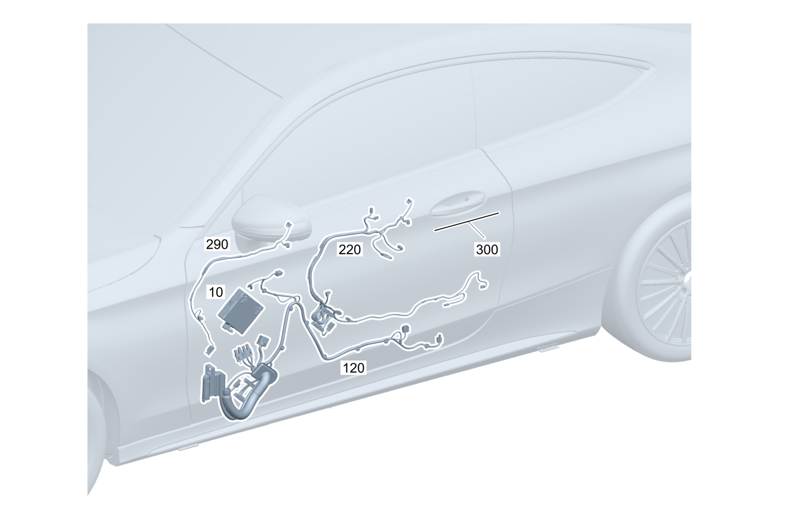

| № | Артикул | Название | Кол. | Примечание | Ограничение |
|---|---|---|---|---|---|
| 10 | A 205 900 01 28 | Блок управления (CONTROL UNIT) | 1 | Блок управления двери спереди слева [672] ДЕТАЛЬ ПОСЛЕ УСТАН.ПРОВЕРИТЬ НА АКТУАЛЬНОСТЬ "ПРОШИВНОГО" ПО [697] ДЕТАЛЬ ПОСТАВЛЯЕТСЯ ТОЛЬКО/ИЛИ ТАКЖЕ КАК ЗАП.ЧАСТЬ | |
| 10 | A 205 900 02 28 | Блок управления (CONTROL UNIT) | 1 | Блок управления двери спереди слева [672] ДЕТАЛЬ ПОСЛЕ УСТАН.ПРОВЕРИТЬ НА АКТУАЛЬНОСТЬ "ПРОШИВНОГО" ПО [697] ДЕТАЛЬ ПОСТАВЛЯЕТСЯ ТОЛЬКО/ИЛИ ТАКЖЕ КАК ЗАП.ЧАСТЬ | P49/221/275/401/873/877 |
| 10 | A 205 900 03 28 | Блок управления (CONTROL UNIT) | 1 | Блок управления двери спереди слева [672] ДЕТАЛЬ ПОСЛЕ УСТАН.ПРОВЕРИТЬ НА АКТУАЛЬНОСТЬ "ПРОШИВНОГО" ПО [697] ДЕТАЛЬ ПОСТАВЛЯЕТСЯ ТОЛЬКО/ИЛИ ТАКЖЕ КАК ЗАП.ЧАСТЬ | (885/234/237/(885/234/237)+(P49/221/275/401/873/877))+-889 |
| 10 | A 222 900 14 14 | Блок управления (CONTROL UNIT) | 1 | Блок управления двери спереди слева [672] ДЕТАЛЬ ПОСЛЕ УСТАН.ПРОВЕРИТЬ НА АКТУАЛЬНОСТЬ "ПРОШИВНОГО" ПО [697] ДЕТАЛЬ ПОСТАВЛЯЕТСЯ ТОЛЬКО/ИЛИ ТАКЖЕ КАК ЗАП.ЧАСТЬ | 889/889+(885/234/237/P49/221/275/401/873/877) |
| 10 | A 213 900 18 22 | Блок управления (CONTROL UNIT) | 1 | Блок управления двери спереди слева [672] ДЕТАЛЬ ПОСЛЕ УСТАН.ПРОВЕРИТЬ НА АКТУАЛЬНОСТЬ "ПРОШИВНОГО" ПО | 809 |
| 10 | A 213 900 18 22 | Блок управления (CONTROL UNIT) | 1 | Блок управления двери спереди слева [672] ДЕТАЛЬ ПОСЛЕ УСТАН.ПРОВЕРИТЬ НА АКТУАЛЬНОСТЬ "ПРОШИВНОГО" ПО | |
| 10 | A 167 900 81 11 | Блок управления (CONTROL UNIT) | 1 | Блок управления двери спереди слева [672] ДЕТАЛЬ ПОСЛЕ УСТАН.ПРОВЕРИТЬ НА АКТУАЛЬНОСТЬ "ПРОШИВНОГО" ПО | |
| 10 | A 213 900 19 22 | Блок управления (CONTROL UNIT) | 1 | Блок управления двери спереди слева [672] ДЕТАЛЬ ПОСЛЕ УСТАН.ПРОВЕРИТЬ НА АКТУАЛЬНОСТЬ "ПРОШИВНОГО" ПО | 809+(P49/221/275/401/873/877) |
| 10 | A 213 900 19 22 | Блок управления (CONTROL UNIT) | 1 | Блок управления двери спереди слева [672] ДЕТАЛЬ ПОСЛЕ УСТАН.ПРОВЕРИТЬ НА АКТУАЛЬНОСТЬ "ПРОШИВНОГО" ПО | P49/221/275/401/873/877 |
| 10 | A 167 900 82 11 | Блок управления (CONTROL UNIT) | 1 | Блок управления двери спереди слева [672] ДЕТАЛЬ ПОСЛЕ УСТАН.ПРОВЕРИТЬ НА АКТУАЛЬНОСТЬ "ПРОШИВНОГО" ПО | P49/221/275/401/873/877 |
| 10 | A 213 900 20 22 | Блок управления (CONTROL UNIT) | 1 | Блок управления двери спереди слева [672] ДЕТАЛЬ ПОСЛЕ УСТАН.ПРОВЕРИТЬ НА АКТУАЛЬНОСТЬ "ПРОШИВНОГО" ПО | 809+(885/889/234/233/(885/889/234/233)+(P49/221/275/401/873/877)) |
| 10 | A 213 900 20 22 | Блок управления (CONTROL UNIT) | 1 | Блок управления двери спереди слева [672] ДЕТАЛЬ ПОСЛЕ УСТАН.ПРОВЕРИТЬ НА АКТУАЛЬНОСТЬ "ПРОШИВНОГО" ПО | (885/889/234/233/(885/889/234/233)+(P49/221/275/401/873/877)) |
| 10 | A 167 900 83 11 | Блок управления (CONTROL UNIT) | 1 | Блок управления двери спереди слева [672] ДЕТАЛЬ ПОСЛЕ УСТАН.ПРОВЕРИТЬ НА АКТУАЛЬНОСТЬ "ПРОШИВНОГО" ПО | (885/889/234/233/(885/889/234/233)+(P49/221/275/401/873/877)) |
| 10 | A 167 900 36 11 | Блок управления (CONTROL UNIT) | 1 | Блок управления двери спереди слева [672] ДЕТАЛЬ ПОСЛЕ УСТАН.ПРОВЕРИТЬ НА АКТУАЛЬНОСТЬ "ПРОШИВНОГО" ПО | 800+050/801 |
| 10 | A 167 900 36 11 | Блок управления (CONTROL UNIT) | 1 | Блок управления двери спереди слева [672] ДЕТАЛЬ ПОСЛЕ УСТАН.ПРОВЕРИТЬ НА АКТУАЛЬНОСТЬ "ПРОШИВНОГО" ПО | |
| 10 | A 167 900 25 18 | Блок управления (CONTROL UNIT) | 1 | Блок управления двери спереди слева [672] ДЕТАЛЬ ПОСЛЕ УСТАН.ПРОВЕРИТЬ НА АКТУАЛЬНОСТЬ "ПРОШИВНОГО" ПО | |
| 10 | A 167 900 37 11 | Блок управления (CONTROL UNIT) | 1 | Блок управления двери спереди слева [672] ДЕТАЛЬ ПОСЛЕ УСТАН.ПРОВЕРИТЬ НА АКТУАЛЬНОСТЬ "ПРОШИВНОГО" ПО [697] ДЕТАЛЬ ПОСТАВЛЯЕТСЯ ТОЛЬКО/ИЛИ ТАКЖЕ КАК ЗАП.ЧАСТЬ | (800+050/801)+(P49/221/275/401/873/877) |
| 10 | A 167 900 37 11 | Блок управления (CONTROL UNIT) | 1 | Блок управления двери спереди слева [672] ДЕТАЛЬ ПОСЛЕ УСТАН.ПРОВЕРИТЬ НА АКТУАЛЬНОСТЬ "ПРОШИВНОГО" ПО [697] ДЕТАЛЬ ПОСТАВЛЯЕТСЯ ТОЛЬКО/ИЛИ ТАКЖЕ КАК ЗАП.ЧАСТЬ | P49/221/275/401/873/877 |
| 10 | A 167 900 26 18 | Блок управления (CONTROL UNIT) | 1 | Блок управления двери спереди слева [672] ДЕТАЛЬ ПОСЛЕ УСТАН.ПРОВЕРИТЬ НА АКТУАЛЬНОСТЬ "ПРОШИВНОГО" ПО | P49/221/275/401/873/877 |
| 10 | A 167 900 38 11 | Блок управления (CONTROL UNIT) | 1 | Блок управления двери спереди слева [672] ДЕТАЛЬ ПОСЛЕ УСТАН.ПРОВЕРИТЬ НА АКТУАЛЬНОСТЬ "ПРОШИВНОГО" ПО [697] ДЕТАЛЬ ПОСТАВЛЯЕТСЯ ТОЛЬКО/ИЛИ ТАКЖЕ КАК ЗАП.ЧАСТЬ | (800+050/801)+((885/889/234/233/(885/889/234/233)+(P49/221/275/401/873/877))) |
| 10 | A 167 900 38 11 | Блок управления (CONTROL UNIT) | 1 | Блок управления двери спереди слева [672] ДЕТАЛЬ ПОСЛЕ УСТАН.ПРОВЕРИТЬ НА АКТУАЛЬНОСТЬ "ПРОШИВНОГО" ПО [697] ДЕТАЛЬ ПОСТАВЛЯЕТСЯ ТОЛЬКО/ИЛИ ТАКЖЕ КАК ЗАП.ЧАСТЬ | 885/889/234/233/(885/889/234/233)+(P49/221/275/401/873/877) |
| 10 | A 167 900 27 18 | Блок управления (CONTROL UNIT) | 1 | Блок управления двери спереди слева [672] ДЕТАЛЬ ПОСЛЕ УСТАН.ПРОВЕРИТЬ НА АКТУАЛЬНОСТЬ "ПРОШИВНОГО" ПО | 885/889/234/233/(885/889/234/233)+(P49/221/275/401/873/877) |
| 10 | A 205 900 04 28 | Блок управления (CONTROL UNIT) | 1 | Блок управления двери спереди справа [672] ДЕТАЛЬ ПОСЛЕ УСТАН.ПРОВЕРИТЬ НА АКТУАЛЬНОСТЬ "ПРОШИВНОГО" ПО [697] ДЕТАЛЬ ПОСТАВЛЯЕТСЯ ТОЛЬКО/ИЛИ ТАКЖЕ КАК ЗАП.ЧАСТЬ | |
| 10 | A 205 900 05 28 | Блок управления (CONTROL UNIT) | 1 | Блок управления двери спереди справа [672] ДЕТАЛЬ ПОСЛЕ УСТАН.ПРОВЕРИТЬ НА АКТУАЛЬНОСТЬ "ПРОШИВНОГО" ПО [697] ДЕТАЛЬ ПОСТАВЛЯЕТСЯ ТОЛЬКО/ИЛИ ТАКЖЕ КАК ЗАП.ЧАСТЬ | P49/222/275/401/873/877 |
| 10 | A 205 900 06 28 | Блок управления (CONTROL UNIT) | 1 | Блок управления двери спереди справа [672] ДЕТАЛЬ ПОСЛЕ УСТАН.ПРОВЕРИТЬ НА АКТУАЛЬНОСТЬ "ПРОШИВНОГО" ПО [697] ДЕТАЛЬ ПОСТАВЛЯЕТСЯ ТОЛЬКО/ИЛИ ТАКЖЕ КАК ЗАП.ЧАСТЬ | (885/234/237/(885/234/237)+(P49/222/275/401/873/877))+-889 |
| 10 | A 222 900 16 14 | Блок управления (CONTROL UNIT) | 1 | Блок управления двери спереди справа [672] ДЕТАЛЬ ПОСЛЕ УСТАН.ПРОВЕРИТЬ НА АКТУАЛЬНОСТЬ "ПРОШИВНОГО" ПО [697] ДЕТАЛЬ ПОСТАВЛЯЕТСЯ ТОЛЬКО/ИЛИ ТАКЖЕ КАК ЗАП.ЧАСТЬ | 889/889+(885/234/237/P49/222/275/401/873/877) |
| 10 | A 213 900 22 22 | Блок управления (CONTROL UNIT) | 1 | Блок управления двери спереди справа [672] ДЕТАЛЬ ПОСЛЕ УСТАН.ПРОВЕРИТЬ НА АКТУАЛЬНОСТЬ "ПРОШИВНОГО" ПО | 809 |
| 10 | A 213 900 22 22 | Блок управления (CONTROL UNIT) | 1 | Блок управления двери спереди справа [672] ДЕТАЛЬ ПОСЛЕ УСТАН.ПРОВЕРИТЬ НА АКТУАЛЬНОСТЬ "ПРОШИВНОГО" ПО | |
| 10 | A 167 900 85 11 | Блок управления (CONTROL UNIT) | 1 | Блок управления двери спереди справа [672] ДЕТАЛЬ ПОСЛЕ УСТАН.ПРОВЕРИТЬ НА АКТУАЛЬНОСТЬ "ПРОШИВНОГО" ПО [697] ДЕТАЛЬ ПОСТАВЛЯЕТСЯ ТОЛЬКО/ИЛИ ТАКЖЕ КАК ЗАП.ЧАСТЬ | |
| 10 | A 213 900 23 22 | Блок управления (CONTROL UNIT) | 1 | Блок управления двери спереди справа [672] ДЕТАЛЬ ПОСЛЕ УСТАН.ПРОВЕРИТЬ НА АКТУАЛЬНОСТЬ "ПРОШИВНОГО" ПО | 809+(P49/221/275/401/873/877) |
| 10 | A 213 900 23 22 | Блок управления (CONTROL UNIT) | 1 | Блок управления двери спереди справа [672] ДЕТАЛЬ ПОСЛЕ УСТАН.ПРОВЕРИТЬ НА АКТУАЛЬНОСТЬ "ПРОШИВНОГО" ПО | P49/221/275/401/873/877 |
| 10 | A 167 900 86 11 | Блок управления (CONTROL UNIT) | 1 | Блок управления двери спереди справа [672] ДЕТАЛЬ ПОСЛЕ УСТАН.ПРОВЕРИТЬ НА АКТУАЛЬНОСТЬ "ПРОШИВНОГО" ПО | P49/221/275/401/873/877 |
| 10 | A 213 900 24 22 | Блок управления (CONTROL UNIT) | 1 | Блок управления двери спереди справа [672] ДЕТАЛЬ ПОСЛЕ УСТАН.ПРОВЕРИТЬ НА АКТУАЛЬНОСТЬ "ПРОШИВНОГО" ПО [697] ДЕТАЛЬ ПОСТАВЛЯЕТСЯ ТОЛЬКО/ИЛИ ТАКЖЕ КАК ЗАП.ЧАСТЬ | 809+(885/889/234/233/(885/889/234/233)+(P49/221/275/401/873/877)) |
| 10 | A 213 900 24 22 | Блок управления (CONTROL UNIT) | 1 | Блок управления двери спереди справа [672] ДЕТАЛЬ ПОСЛЕ УСТАН.ПРОВЕРИТЬ НА АКТУАЛЬНОСТЬ "ПРОШИВНОГО" ПО [697] ДЕТАЛЬ ПОСТАВЛЯЕТСЯ ТОЛЬКО/ИЛИ ТАКЖЕ КАК ЗАП.ЧАСТЬ | (885/889/234/233/(885/889/234/233)+(P49/221/275/401/873/877)) |
| 10 | A 167 900 87 11 | Блок управления | 1 | Блок управления двери спереди справа [672] ДЕТАЛЬ ПОСЛЕ УСТАН.ПРОВЕРИТЬ НА АКТУАЛЬНОСТЬ "ПРОШИВНОГО" ПО | (885/889/234/233/(885/889/234/233)+(P49/221/275/401/873/877)) |
| 10 | A 167 900 40 11 | Блок управления (CONTROL UNIT) | 1 | Блок управления двери спереди справа [672] ДЕТАЛЬ ПОСЛЕ УСТАН.ПРОВЕРИТЬ НА АКТУАЛЬНОСТЬ "ПРОШИВНОГО" ПО [697] ДЕТАЛЬ ПОСТАВЛЯЕТСЯ ТОЛЬКО/ИЛИ ТАКЖЕ КАК ЗАП.ЧАСТЬ | 800+050/801 |
| 10 | A 167 900 40 11 | Блок управления (CONTROL UNIT) | 1 | Блок управления двери спереди справа [672] ДЕТАЛЬ ПОСЛЕ УСТАН.ПРОВЕРИТЬ НА АКТУАЛЬНОСТЬ "ПРОШИВНОГО" ПО [697] ДЕТАЛЬ ПОСТАВЛЯЕТСЯ ТОЛЬКО/ИЛИ ТАКЖЕ КАК ЗАП.ЧАСТЬ | |
| 10 | A 167 900 29 18 | Блок управления (CONTROL UNIT) | 1 | Блок управления двери спереди справа [672] ДЕТАЛЬ ПОСЛЕ УСТАН.ПРОВЕРИТЬ НА АКТУАЛЬНОСТЬ "ПРОШИВНОГО" ПО | |
| 10 | A 167 900 41 11 | Блок управления (CONTROL UNIT) | 1 | Блок управления двери спереди справа [672] ДЕТАЛЬ ПОСЛЕ УСТАН.ПРОВЕРИТЬ НА АКТУАЛЬНОСТЬ "ПРОШИВНОГО" ПО [697] ДЕТАЛЬ ПОСТАВЛЯЕТСЯ ТОЛЬКО/ИЛИ ТАКЖЕ КАК ЗАП.ЧАСТЬ | (800+050/801)+(P49/221/275/401/873/877) |
| 10 | A 167 900 41 11 | Блок управления (CONTROL UNIT) | 1 | Блок управления двери спереди справа [672] ДЕТАЛЬ ПОСЛЕ УСТАН.ПРОВЕРИТЬ НА АКТУАЛЬНОСТЬ "ПРОШИВНОГО" ПО [697] ДЕТАЛЬ ПОСТАВЛЯЕТСЯ ТОЛЬКО/ИЛИ ТАКЖЕ КАК ЗАП.ЧАСТЬ | P49/221/275/401/873/877 |
| 10 | A 167 900 30 18 | Блок управления (CONTROL UNIT) | 1 | Блок управления двери спереди справа [672] ДЕТАЛЬ ПОСЛЕ УСТАН.ПРОВЕРИТЬ НА АКТУАЛЬНОСТЬ "ПРОШИВНОГО" ПО [697] ДЕТАЛЬ ПОСТАВЛЯЕТСЯ ТОЛЬКО/ИЛИ ТАКЖЕ КАК ЗАП.ЧАСТЬ | P49/221/275/401/873/877 |
| 10 | A 167 900 42 11 | Блок управления (CONTROL UNIT) | 1 | Блок управления двери спереди справа [672] ДЕТАЛЬ ПОСЛЕ УСТАН.ПРОВЕРИТЬ НА АКТУАЛЬНОСТЬ "ПРОШИВНОГО" ПО [697] ДЕТАЛЬ ПОСТАВЛЯЕТСЯ ТОЛЬКО/ИЛИ ТАКЖЕ КАК ЗАП.ЧАСТЬ | (800+050/801)+((885/889/234/233/(885/889/234/233)+(P49/221/275/401/873/877))) |
| 10 | A 167 900 42 11 | Блок управления (CONTROL UNIT) | 1 | Блок управления двери спереди справа [672] ДЕТАЛЬ ПОСЛЕ УСТАН.ПРОВЕРИТЬ НА АКТУАЛЬНОСТЬ "ПРОШИВНОГО" ПО [697] ДЕТАЛЬ ПОСТАВЛЯЕТСЯ ТОЛЬКО/ИЛИ ТАКЖЕ КАК ЗАП.ЧАСТЬ | 885/889/234/233/(885/889/234/233)+(P49/221/275/401/873/877) |
| 10 | A 167 900 31 18 | Блок управления (CONTROL UNIT) | 1 | Блок управления двери спереди справа [672] ДЕТАЛЬ ПОСЛЕ УСТАН.ПРОВЕРИТЬ НА АКТУАЛЬНОСТЬ "ПРОШИВНОГО" ПО | 885/889/234/233/(885/889/234/233)+(P49/221/275/401/873/877) |
| 120 | A 205 540 85 31 | Электрический жгут (ELECTRICAL WIRING HARNESS) | 1 | Дверь спереди слева, разъем двери к блоку управления и потребителю | |
| 120 | A 205 540 86 31 | Электрический жгут (ELECTRICAL WIRING HARNESS) | 1 | Дверь спереди слева, разъем двери к блоку управления и потребителю | 810 |
| 120 | A 205 540 87 31 | Электрический жгут (ELECTRICAL WIRING HARNESS) | 1 | Дверь спереди слева, разъем двери к блоку управления и потребителю Рулевое управление: Вправо | 274 |
| 120 | A 205 540 88 31 | Электрический жгут (ELECTRICAL WIRING HARNESS) | 1 | Дверь спереди слева, разъем двери к блоку управления и потребителю Рулевое управление: Вправо | 810+274 |
| 120 | A 205 540 89 31 | Электрический жгут (ELECTRICAL WIRING HARNESS) | 1 | Дверь спереди слева, разъем двери к блоку управления и потребителю Рулевое управление: Вправо | 501+274 |
| 120 | A 205 540 90 31 | Электрический жгут (ELECTRICAL WIRING HARNESS) | 1 | Дверь спереди слева, разъем двери к блоку управления и потребителю Рулевое управление: Вправо | 501+810+274 |
| 120 | A 205 540 91 31 | Электрический жгут (ELECTRICAL WIRING HARNESS) | 1 | Дверь спереди слева, разъем двери к блоку управления и потребителю | 889 |
| 120 | A 205 540 92 31 | Электрический жгут (ELECTRICAL WIRING HARNESS) | 1 | Дверь спереди слева, разъем двери к блоку управления и потребителю | 889+810 |
| 120 | A 205 540 93 31 | Электрический жгут (ELECTRICAL WIRING HARNESS) | 1 | Дверь спереди слева, разъем двери к блоку управления и потребителю Рулевое управление: Вправо | 889+274 |
| 120 | A 205 540 94 31 | Электрический жгут (ELECTRICAL WIRING HARNESS) | 1 | Дверь спереди слева, разъем двери к блоку управления и потребителю Рулевое управление: Вправо | 889+810+274 |
| 120 | A 205 540 95 31 | Электрический жгут (ELECTRICAL WIRING HARNESS) | 1 | Дверь спереди слева, разъем двери к блоку управления и потребителю Рулевое управление: Вправо | 889+501+274 |
| 120 | A 205 540 96 31 | Электрический жгут (ELECTRICAL WIRING HARNESS) | 1 | Дверь спереди слева, разъем двери к блоку управления и потребителю Рулевое управление: Вправо | 889+501+810+274 |
| 120 | A 205 540 97 31 | Электрический жгут (ELECTRICAL WIRING HARNESS) | 1 | Дверь спереди слева, разъем двери к блоку управления и потребителю Рулевое управление: Влево | 270 |
| 120 | A 205 540 98 31 | Электрический жгут (ELECTRICAL WIRING HARNESS) | 1 | Дверь спереди слева, разъем двери к блоку управления и потребителю Рулевое управление: Влево | 810+270 |
| 120 | A 205 540 99 31 | Электрический жгут (ELECTRICAL WIRING HARNESS) | 1 | Дверь спереди слева, разъем двери к блоку управления и потребителю Рулевое управление: Влево | 274+270 |
| 120 | A 205 540 00 36 | Электрический жгут (ELECTRICAL WIRING HARNESS) | 1 | Дверь спереди слева, разъем двери к блоку управления и потребителю Рулевое управление: Влево | 810+(274+270) |
| 120 | A 205 540 01 36 | Электрический жгут (ELECTRICAL WIRING HARNESS) | 1 | Дверь спереди слева, разъем двери к блоку управления и потребителю Рулевое управление: Влево | 501+274+270 |
| 120 | A 205 540 02 36 | Электрический жгут (ELECTRICAL WIRING HARNESS) | 1 | Дверь спереди слева, разъем двери к блоку управления и потребителю Рулевое управление: Влево | 501+810+274+270 |
| 120 | A 205 540 03 36 | Электрический жгут (ELECTRICAL WIRING HARNESS) | 1 | Дверь спереди слева, разъем двери к блоку управления и потребителю Рулевое управление: Влево | 889+270 |
| 120 | A 205 540 04 36 | Электрический жгут (ELECTRICAL WIRING HARNESS) | 1 | Дверь спереди слева, разъем двери к блоку управления и потребителю Рулевое управление: Влево | 889+810+270 |
| 120 | A 205 540 05 36 | Электрический жгут (ELECTRICAL WIRING HARNESS) | 1 | Дверь спереди слева, разъем двери к блоку управления и потребителю Рулевое управление: Влево | 889+274+270 |
| 120 | A 205 540 06 36 | Электрический жгут (ELECTRICAL WIRING HARNESS) | 1 | Дверь спереди слева, разъем двери к блоку управления и потребителю Рулевое управление: Влево | 889+810+274+270 |
| 120 | A 205 540 07 36 | Электрический жгут (ELECTRICAL WIRING HARNESS) | 1 | Дверь спереди слева, разъем двери к блоку управления и потребителю Рулевое управление: Влево | 889+501+274+270 |
| 120 | A 205 540 08 36 | Электрический жгут (ELECTRICAL WIRING HARNESS) | 1 | Дверь спереди слева, разъем двери к блоку управления и потребителю Рулевое управление: Влево | 889+501+810+274+270 |
| 120 | A 205 540 17 48 | Электрический жгут (ELECTRICAL WIRING HARNESS) | 1 | Дверь спереди слева, разъем двери к блоку управления и потребителю | 809 |
| 120 | A 205 540 17 48 | Электрический жгут (ELECTRICAL WIRING HARNESS) | 1 | Дверь спереди слева, разъем двери к блоку управления и потребителю | |
| 120 | A 205 540 18 48 | Электрический жгут (ELECTRICAL WIRING HARNESS) | 1 | Дверь спереди слева, разъем двери к блоку управления и потребителю | 809+(810/853) |
| 120 | A 205 540 18 48 | Электрический жгут (ELECTRICAL WIRING HARNESS) | 1 | Дверь спереди слева, разъем двери к блоку управления и потребителю | (810/853) |
| 120 | A 205 540 19 48 | Электрический жгут (ELECTRICAL WIRING HARNESS) | 1 | Дверь спереди слева, разъем двери к блоку управления и потребителю Рулевое управление: Вправо | 809+274 |
| 120 | A 205 540 19 48 | Электрический жгут (ELECTRICAL WIRING HARNESS) | 1 | Дверь спереди слева, разъем двери к блоку управления и потребителю Рулевое управление: Вправо | 274 |
| 120 | A 205 540 20 48 | Электрический жгут (ELECTRICAL WIRING HARNESS) | 1 | Дверь спереди слева, разъем двери к блоку управления и потребителю Рулевое управление: Вправо | 809+(810/853)+274 |
| 120 | A 205 540 20 48 | Электрический жгут (ELECTRICAL WIRING HARNESS) | 1 | Дверь спереди слева, разъем двери к блоку управления и потребителю Рулевое управление: Вправо | (810/853)+274 |
| 120 | A 205 540 21 48 | Электрический жгут (ELECTRICAL WIRING HARNESS) | 1 | Дверь спереди слева, разъем двери к блоку управления и потребителю Рулевое управление: Вправо | 809+501+274 |
| 120 | A 205 540 21 48 | Электрический жгут (ELECTRICAL WIRING HARNESS) | 1 | Дверь спереди слева, разъем двери к блоку управления и потребителю Рулевое управление: Вправо | 501+274 |
| 120 | A 205 540 22 48 | Электрический жгут (ELECTRICAL WIRING HARNESS) | 1 | Дверь спереди слева, разъем двери к блоку управления и потребителю Рулевое управление: Вправо | 809+501+(810/853)+274 |
| 120 | A 205 540 22 48 | Электрический жгут (ELECTRICAL WIRING HARNESS) | 1 | Дверь спереди слева, разъем двери к блоку управления и потребителю Рулевое управление: Вправо | 501+(810/853)+274 |
| 120 | A 205 540 03 49 | Электрический жгут | 1 | Дверь спереди слева, разъем двери к блоку управления и потребителю | 809+889 |
| 120 | A 205 540 03 49 | Электрический жгут | 1 | Дверь спереди слева, разъем двери к блоку управления и потребителю | 889 |
| 120 | A 205 540 04 49 | Электрический жгут | 1 | Дверь спереди слева, разъем двери к блоку управления и потребителю | 809+889+(810/853) |
| 120 | A 205 540 04 49 | Электрический жгут | 1 | Дверь спереди слева, разъем двери к блоку управления и потребителю | 889+(810/853) |
| 120 | A 205 540 05 49 | Электрический жгут (ELECTRICAL WIRING HARNESS) | 1 | Дверь спереди слева, разъем двери к блоку управления и потребителю Рулевое управление: Вправо | 809+889+274 |
| 120 | A 205 540 05 49 | Электрический жгут (ELECTRICAL WIRING HARNESS) | 1 | Дверь спереди слева, разъем двери к блоку управления и потребителю Рулевое управление: Вправо | 889+274 |
| 120 | A 205 540 06 49 | Электрический жгут (ELECTRICAL WIRING HARNESS) | 1 | Дверь спереди слева, разъем двери к блоку управления и потребителю Рулевое управление: Вправо | 809+889+(810/853)+274 |
| 120 | A 205 540 06 49 | Электрический жгут (ELECTRICAL WIRING HARNESS) | 1 | Дверь спереди слева, разъем двери к блоку управления и потребителю Рулевое управление: Вправо | 889+(810/853)+274 |
| 120 | A 205 540 07 49 | Электрический жгут (ELECTRICAL WIRING HARNESS) | 1 | Дверь спереди слева, разъем двери к блоку управления и потребителю Рулевое управление: Вправо | 809+889+501+274 |
| 120 | A 205 540 07 49 | Электрический жгут (ELECTRICAL WIRING HARNESS) | 1 | Дверь спереди слева, разъем двери к блоку управления и потребителю Рулевое управление: Вправо | 889+501+274 |
| 120 | A 205 540 08 49 | Электрический жгут (ELECTRICAL WIRING HARNESS) | 1 | Дверь спереди слева, разъем двери к блоку управления и потребителю Рулевое управление: Вправо | 809+889+501+(810/853)+274 |
| 120 | A 205 540 08 49 | Электрический жгут (ELECTRICAL WIRING HARNESS) | 1 | Дверь спереди слева, разъем двери к блоку управления и потребителю Рулевое управление: Вправо | 889+501+(810/853)+274 |
| 120 | A 205 540 39 48 | Электрический жгут (ELECTRICAL WIRING HARNESS) | 1 | Дверь спереди слева, разъем двери к блоку управления и потребителю Рулевое управление: Влево | 809+270 |
| 120 | A 205 540 39 48 | Электрический жгут (ELECTRICAL WIRING HARNESS) | 1 | Дверь спереди слева, разъем двери к блоку управления и потребителю Рулевое управление: Влево | 270 |
| 120 | A 205 540 40 48 | Электрический жгут (ELECTRICAL WIRING HARNESS) | 1 | Дверь спереди слева, разъем двери к блоку управления и потребителю Рулевое управление: Влево | 809+(810/853)+270 |
| 120 | A 205 540 40 48 | Электрический жгут (ELECTRICAL WIRING HARNESS) | 1 | Дверь спереди слева, разъем двери к блоку управления и потребителю Рулевое управление: Влево | (810/853)+270 |
| 120 | A 205 540 41 48 | Электрический жгут (ELECTRICAL WIRING HARNESS) | 1 | Дверь спереди слева, разъем двери к блоку управления и потребителю Рулевое управление: Влево | 809+274+270 |
| 120 | A 205 540 41 48 | Электрический жгут (ELECTRICAL WIRING HARNESS) | 1 | Дверь спереди слева, разъем двери к блоку управления и потребителю Рулевое управление: Влево | 274+270 |
| 120 | A 205 540 42 48 | Электрический жгут (ELECTRICAL WIRING HARNESS) | 1 | Дверь спереди слева, разъем двери к блоку управления и потребителю Рулевое управление: Влево | 809+(810/853)+(274+270) |
| 120 | A 205 540 42 48 | Электрический жгут (ELECTRICAL WIRING HARNESS) | 1 | Дверь спереди слева, разъем двери к блоку управления и потребителю Рулевое управление: Влево | (810/853)+(274+270) |
| 120 | A 205 540 43 48 | Электрический жгут (ELECTRICAL WIRING HARNESS) | 1 | Дверь спереди слева, разъем двери к блоку управления и потребителю Рулевое управление: Влево | 809+501+274+270 |
| 120 | A 205 540 43 48 | Электрический жгут (ELECTRICAL WIRING HARNESS) | 1 | Дверь спереди слева, разъем двери к блоку управления и потребителю Рулевое управление: Влево | 501+274+270 |
| 120 | A 205 540 44 48 | Электрический жгут (ELECTRICAL WIRING HARNESS) | 1 | Дверь спереди слева, разъем двери к блоку управления и потребителю Рулевое управление: Влево | 809+501+(810/853)+274+270 |
| 120 | A 205 540 44 48 | Электрический жгут (ELECTRICAL WIRING HARNESS) | 1 | Дверь спереди слева, разъем двери к блоку управления и потребителю Рулевое управление: Влево | 501+(810/853)+274+270 |
| 120 | A 205 540 09 49 | Электрический жгут (ELECTRICAL WIRING HARNESS) | 1 | Дверь спереди слева, разъем двери к блоку управления и потребителю Рулевое управление: Влево | 809+889+270 |
| 120 | A 205 540 09 49 | Электрический жгут (ELECTRICAL WIRING HARNESS) | 1 | Дверь спереди слева, разъем двери к блоку управления и потребителю Рулевое управление: Влево | 889+270 |
| 120 | A 205 540 10 49 | Электрический жгут (ELECTRICAL WIRING HARNESS) | 1 | Дверь спереди слева, разъем двери к блоку управления и потребителю Рулевое управление: Влево | 809+889+(810/853)+270 |
| 120 | A 205 540 10 49 | Электрический жгут (ELECTRICAL WIRING HARNESS) | 1 | Дверь спереди слева, разъем двери к блоку управления и потребителю Рулевое управление: Влево | 889+(810/853)+270 |
| 120 | A 205 540 11 49 | Электрический жгут (ELECTRICAL WIRING HARNESS) | 1 | Дверь спереди слева, разъем двери к блоку управления и потребителю Рулевое управление: Влево | 809+889+274+270 |
| 120 | A 205 540 11 49 | Электрический жгут (ELECTRICAL WIRING HARNESS) | 1 | Дверь спереди слева, разъем двери к блоку управления и потребителю Рулевое управление: Влево | 889+274+270 |
| 120 | A 205 540 12 49 | Электрический жгут (ELECTRICAL WIRING HARNESS) | 1 | Дверь спереди слева, разъем двери к блоку управления и потребителю Рулевое управление: Влево | 809+889+(810/853)+274+270 |
| 120 | A 205 540 12 49 | Электрический жгут (ELECTRICAL WIRING HARNESS) | 1 | Дверь спереди слева, разъем двери к блоку управления и потребителю Рулевое управление: Влево | 889+(810/853)+274+270 |
| 120 | A 205 540 13 49 | Электрический жгут (ELECTRICAL WIRING HARNESS) | 1 | Дверь спереди слева, разъем двери к блоку управления и потребителю Рулевое управление: Влево | 809+889+501+274+270 |
| 120 | A 205 540 13 49 | Электрический жгут (ELECTRICAL WIRING HARNESS) | 1 | Дверь спереди слева, разъем двери к блоку управления и потребителю Рулевое управление: Влево | 889+501+274+270 |
| 120 | A 205 540 14 49 | Электрический жгут (ELECTRICAL WIRING HARNESS) | 1 | Дверь спереди слева, разъем двери к блоку управления и потребителю Рулевое управление: Влево | 809+889+501+(810/853)+274+270 |
| 120 | A 205 540 14 49 | Электрический жгут (ELECTRICAL WIRING HARNESS) | 1 | Дверь спереди слева, разъем двери к блоку управления и потребителю Рулевое управление: Влево | 889+501+(810/853)+274+270 |
| 120 | A 205 540 01 48 | Электрический жгут (ELECTRICAL WIRING HARNESS) | 1 | Дверь спереди слева, разъем двери к блоку управления и потребителю Рулевое управление: Влево | 809+896 |
| 120 | A 205 540 01 48 | Электрический жгут (ELECTRICAL WIRING HARNESS) | 1 | Дверь спереди слева, разъем двери к блоку управления и потребителю Рулевое управление: Влево | 896 |
| 120 | A 205 540 02 48 | Электрический жгут | 1 | Дверь спереди слева, разъем двери к блоку управления и потребителю Рулевое управление: Влево | 809+896+(810/853) |
| 120 | A 205 540 02 48 | Электрический жгут | 1 | Дверь спереди слева, разъем двери к блоку управления и потребителю Рулевое управление: Влево | 896+(810/853) |
| 120 | A 205 540 03 48 | Электрический жгут | 1 | Дверь спереди слева, разъем двери к блоку управления и потребителю Рулевое управление: Влево | 809+896+889 |
| 120 | A 205 540 03 48 | Электрический жгут | 1 | Дверь спереди слева, разъем двери к блоку управления и потребителю Рулевое управление: Влево | 896+889 |
| 120 | A 205 540 04 48 | Электрический жгут | 1 | Дверь спереди слева, разъем двери к блоку управления и потребителю Рулевое управление: Влево | 809+896+889+(810/853) |
| 120 | A 205 540 04 48 | Электрический жгут | 1 | Дверь спереди слева, разъем двери к блоку управления и потребителю Рулевое управление: Влево | 896+889+(810/853) |
| 120 | A 205 540 65 48 | Электрический жгут | 1 | Дверь спереди слева, разъем двери к блоку управления и потребителю Рулевое управление: Влево | 809+896+270 |
| 120 | A 205 540 65 48 | Электрический жгут | 1 | Дверь спереди слева, разъем двери к блоку управления и потребителю Рулевое управление: Влево | 896+270 |
| 120 | A 205 540 66 48 | Электрический жгут | 1 | Дверь спереди слева, разъем двери к блоку управления и потребителю Рулевое управление: Влево | 809+896+(810/853)+270 |
| 120 | A 205 540 66 48 | Электрический жгут | 1 | Дверь спереди слева, разъем двери к блоку управления и потребителю Рулевое управление: Влево | 896+(810/853)+270 |
| 120 | A 205 540 67 48 | Электрический жгут | 1 | Дверь спереди слева, разъем двери к блоку управления и потребителю Рулевое управление: Влево | 809+896+274+270 |
| 120 | A 205 540 67 48 | Электрический жгут | 1 | Дверь спереди слева, разъем двери к блоку управления и потребителю Рулевое управление: Влево | 896+274+270 |
| 120 | A 205 540 68 48 | Электрический жгут | 1 | Дверь спереди слева, разъем двери к блоку управления и потребителю Рулевое управление: Влево | 809+896+(810/853)+274+270 |
| 120 | A 205 540 68 48 | Электрический жгут | 1 | Дверь спереди слева, разъем двери к блоку управления и потребителю Рулевое управление: Влево | 896+(810/853)+274+270 |
| 120 | A 205 540 69 48 | Электрический жгут | 1 | Дверь спереди слева, разъем двери к блоку управления и потребителю Рулевое управление: Влево | 809+896+501+274+270 |
| 120 | A 205 540 69 48 | Электрический жгут | 1 | Дверь спереди слева, разъем двери к блоку управления и потребителю Рулевое управление: Влево | 896+501+274+270 |
| 120 | A 205 540 70 48 | Электрический жгут | 1 | Дверь спереди слева, разъем двери к блоку управления и потребителю Рулевое управление: Влево | 809+896+501+(810/853)+274+270 |
| 120 | A 205 540 70 48 | Электрический жгут | 1 | Дверь спереди слева, разъем двери к блоку управления и потребителю Рулевое управление: Влево | 896+501+(810/853)+274+270 |
| 120 | A 205 540 71 48 | Электрический жгут | 1 | Дверь спереди слева, разъем двери к блоку управления и потребителю Рулевое управление: Влево | 809+896+889+270 |
| 120 | A 205 540 71 48 | Электрический жгут | 1 | Дверь спереди слева, разъем двери к блоку управления и потребителю Рулевое управление: Влево | 896+889+270 |
| 120 | A 205 540 72 48 | Электрический жгут | 1 | Дверь спереди слева, разъем двери к блоку управления и потребителю Рулевое управление: Влево | 809+896+889+(810/853)+270 |
| 120 | A 205 540 72 48 | Электрический жгут | 1 | Дверь спереди слева, разъем двери к блоку управления и потребителю Рулевое управление: Влево | 896+889+(810/853)+270 |
| 120 | A 205 540 07 48 | Электрический жгут | 1 | Дверь спереди слева, разъем двери к блоку управления и потребителю Рулевое управление: Влево | 809+896+889+274+270 |
| 120 | A 205 540 07 48 | Электрический жгут | 1 | Дверь спереди слева, разъем двери к блоку управления и потребителю Рулевое управление: Влево | 896+889+274+270 |
| 120 | A 205 540 08 48 | Электрический жгут | 1 | Дверь спереди слева, разъем двери к блоку управления и потребителю Рулевое управление: Влево | 809+896+889+(810/853)+274+270 |
| 120 | A 205 540 08 48 | Электрический жгут | 1 | Дверь спереди слева, разъем двери к блоку управления и потребителю Рулевое управление: Влево | 896+889+(810/853)+274+270 |
| 120 | A 205 540 09 48 | Электрический жгут | 1 | Дверь спереди слева, разъем двери к блоку управления и потребителю Рулевое управление: Влево | 809+896+889+501+274+270 |
| 120 | A 205 540 09 48 | Электрический жгут | 1 | Дверь спереди слева, разъем двери к блоку управления и потребителю Рулевое управление: Влево | 896+889+501+274+270 |
| 120 | A 205 540 10 48 | Электрический жгут | 1 | Дверь спереди слева, разъем двери к блоку управления и потребителю Рулевое управление: Влево | 809+896+889+501+(810/853)+274+270 |
| 120 | A 205 540 10 48 | Электрический жгут | 1 | Дверь спереди слева, разъем двери к блоку управления и потребителю Рулевое управление: Влево | 896+889+501+(810/853)+274+270 |
| 120 | A 205 540 85 31 | Электрический жгут (ELECTRICAL WIRING HARNESS) | 1 | Дверь спереди справа, разъем двери к блоку управления и потребителю | |
| 120 | A 205 540 86 31 | Электрический жгут (ELECTRICAL WIRING HARNESS) | 1 | Дверь спереди справа, разъем двери к блоку управления и потребителю | 810 |
| 120 | A 205 540 87 31 | Электрический жгут (ELECTRICAL WIRING HARNESS) | 1 | Дверь спереди справа, разъем двери к блоку управления и потребителю Рулевое управление: Влево | 274 |
| 120 | A 205 540 88 31 | Электрический жгут (ELECTRICAL WIRING HARNESS) | 1 | Дверь спереди справа, разъем двери к блоку управления и потребителю Рулевое управление: Влево | 810+274 |
| 120 | A 205 540 89 31 | Электрический жгут (ELECTRICAL WIRING HARNESS) | 1 | Дверь спереди справа, разъем двери к блоку управления и потребителю Рулевое управление: Влево | 501+274 |
| 120 | A 205 540 90 31 | Электрический жгут (ELECTRICAL WIRING HARNESS) | 1 | Дверь спереди справа, разъем двери к блоку управления и потребителю Рулевое управление: Влево | 501+810+274 |
| 120 | A 205 540 91 31 | Электрический жгут (ELECTRICAL WIRING HARNESS) | 1 | Дверь спереди справа, разъем двери к блоку управления и потребителю | 889 |
| 120 | A 205 540 92 31 | Электрический жгут (ELECTRICAL WIRING HARNESS) | 1 | Дверь спереди справа, разъем двери к блоку управления и потребителю | 889+810 |
| 120 | A 205 540 93 31 | Электрический жгут (ELECTRICAL WIRING HARNESS) | 1 | Дверь спереди справа, разъем двери к блоку управления и потребителю Рулевое управление: Влево | 889+274 |
| 120 | A 205 540 94 31 | Электрический жгут (ELECTRICAL WIRING HARNESS) | 1 | Дверь спереди справа, разъем двери к блоку управления и потребителю Рулевое управление: Влево | 889+810+274 |
| 120 | A 205 540 95 31 | Электрический жгут (ELECTRICAL WIRING HARNESS) | 1 | Дверь спереди справа, разъем двери к блоку управления и потребителю Рулевое управление: Влево | 889+501+274 |
| 120 | A 205 540 96 31 | Электрический жгут (ELECTRICAL WIRING HARNESS) | 1 | Дверь спереди справа, разъем двери к блоку управления и потребителю Рулевое управление: Влево | 889+501+810+274 |
| 120 | A 205 540 97 31 | Электрический жгут (ELECTRICAL WIRING HARNESS) | 1 | Дверь спереди справа, разъем двери к блоку управления и потребителю Рулевое управление: Вправо | 270 |
| 120 | A 205 540 98 31 | Электрический жгут (ELECTRICAL WIRING HARNESS) | 1 | Дверь спереди справа, разъем двери к блоку управления и потребителю Рулевое управление: Вправо | 810+270 |
| 120 | A 205 540 99 31 | Электрический жгут (ELECTRICAL WIRING HARNESS) | 1 | Дверь спереди справа, разъем двери к блоку управления и потребителю Рулевое управление: Вправо | 274+270 |
| 120 | A 205 540 00 36 | Электрический жгут (ELECTRICAL WIRING HARNESS) | 1 | Дверь спереди справа, разъем двери к блоку управления и потребителю Рулевое управление: Вправо | 810+274+270 |
| 120 | A 205 540 01 36 | Электрический жгут (ELECTRICAL WIRING HARNESS) | 1 | Дверь спереди справа, разъем двери к блоку управления и потребителю Рулевое управление: Вправо | 501+274+270 |
| 120 | A 205 540 02 36 | Электрический жгут (ELECTRICAL WIRING HARNESS) | 1 | Дверь спереди справа, разъем двери к блоку управления и потребителю Рулевое управление: Вправо | 501+810+274+270 |
| 120 | A 205 540 03 36 | Электрический жгут (ELECTRICAL WIRING HARNESS) | 1 | Дверь спереди справа, разъем двери к блоку управления и потребителю Рулевое управление: Вправо | 889+270 |
| 120 | A 205 540 04 36 | Электрический жгут (ELECTRICAL WIRING HARNESS) | 1 | Дверь спереди справа, разъем двери к блоку управления и потребителю Рулевое управление: Вправо | 889+810+270 |
| 120 | A 205 540 05 36 | Электрический жгут (ELECTRICAL WIRING HARNESS) | 1 | Дверь спереди справа, разъем двери к блоку управления и потребителю Рулевое управление: Вправо | 889+274+270 |
| 120 | A 205 540 06 36 | Электрический жгут (ELECTRICAL WIRING HARNESS) | 1 | Дверь спереди справа, разъем двери к блоку управления и потребителю Рулевое управление: Вправо | 889+810+274+270 |
| 120 | A 205 540 07 36 | Электрический жгут (ELECTRICAL WIRING HARNESS) | 1 | Дверь спереди справа, разъем двери к блоку управления и потребителю Рулевое управление: Вправо | 889+501+274+270 |
| 120 | A 205 540 08 36 | Электрический жгут (ELECTRICAL WIRING HARNESS) | 1 | Дверь спереди справа, разъем двери к блоку управления и потребителю Рулевое управление: Вправо | 889+501+810+274+270 |
| 120 | A 205 540 17 48 | Электрический жгут (ELECTRICAL WIRING HARNESS) | 1 | Дверь спереди справа, разъем двери к блоку управления и потребителю | 809 |
| 120 | A 205 540 17 48 | Электрический жгут (ELECTRICAL WIRING HARNESS) | 1 | Дверь спереди справа, разъем двери к блоку управления и потребителю | |
| 120 | A 205 540 18 48 | Электрический жгут (ELECTRICAL WIRING HARNESS) | 1 | Дверь спереди справа, разъем двери к блоку управления и потребителю | 809+(810/853) |
| 120 | A 205 540 18 48 | Электрический жгут (ELECTRICAL WIRING HARNESS) | 1 | Дверь спереди справа, разъем двери к блоку управления и потребителю | (810/853) |
| 120 | A 205 540 19 48 | Электрический жгут (ELECTRICAL WIRING HARNESS) | 1 | Дверь спереди справа, разъем двери к блоку управления и потребителю Рулевое управление: Влево | 809+274 |
| 120 | A 205 540 19 48 | Электрический жгут (ELECTRICAL WIRING HARNESS) | 1 | Дверь спереди справа, разъем двери к блоку управления и потребителю Рулевое управление: Влево | 274 |
| 120 | A 205 540 20 48 | Электрический жгут (ELECTRICAL WIRING HARNESS) | 1 | Дверь спереди справа, разъем двери к блоку управления и потребителю Рулевое управление: Влево | 809+(810/853)+274 |
| 120 | A 205 540 20 48 | Электрический жгут (ELECTRICAL WIRING HARNESS) | 1 | Дверь спереди справа, разъем двери к блоку управления и потребителю Рулевое управление: Влево | (810/853)+274 |
| 120 | A 205 540 21 48 | Электрический жгут (ELECTRICAL WIRING HARNESS) | 1 | Дверь спереди справа, разъем двери к блоку управления и потребителю Рулевое управление: Влево | 809+501+274 |
| 120 | A 205 540 21 48 | Электрический жгут (ELECTRICAL WIRING HARNESS) | 1 | Дверь спереди справа, разъем двери к блоку управления и потребителю Рулевое управление: Влево | 501+274 |
| 120 | A 205 540 22 48 | Электрический жгут (ELECTRICAL WIRING HARNESS) | 1 | Дверь спереди справа, разъем двери к блоку управления и потребителю Рулевое управление: Влево | 809+501+(810/853)+274 |
| 120 | A 205 540 22 48 | Электрический жгут (ELECTRICAL WIRING HARNESS) | 1 | Дверь спереди справа, разъем двери к блоку управления и потребителю Рулевое управление: Влево | 501+(810/853)+274 |
| 120 | A 205 540 03 49 | Электрический жгут | 1 | Дверь спереди справа, разъем двери к блоку управления и потребителю | 809+889 |
| 120 | A 205 540 03 49 | Электрический жгут | 1 | Дверь спереди справа, разъем двери к блоку управления и потребителю | 889 |
| 120 | A 205 540 04 49 | Электрический жгут | 1 | Дверь спереди справа, разъем двери к блоку управления и потребителю | 809+889+(810/853) |
| 120 | A 205 540 04 49 | Электрический жгут | 1 | Дверь спереди справа, разъем двери к блоку управления и потребителю | 889+(810/853) |
| 120 | A 205 540 05 49 | Электрический жгут (ELECTRICAL WIRING HARNESS) | 1 | Дверь спереди справа, разъем двери к блоку управления и потребителю Рулевое управление: Влево | 809+889+274 |
| 120 | A 205 540 05 49 | Электрический жгут (ELECTRICAL WIRING HARNESS) | 1 | Дверь спереди справа, разъем двери к блоку управления и потребителю Рулевое управление: Влево | 889+274 |
| 120 | A 205 540 06 49 | Электрический жгут (ELECTRICAL WIRING HARNESS) | 1 | Дверь спереди справа, разъем двери к блоку управления и потребителю Рулевое управление: Влево | 809+889+(810/853)+274 |
| 120 | A 205 540 06 49 | Электрический жгут (ELECTRICAL WIRING HARNESS) | 1 | Дверь спереди справа, разъем двери к блоку управления и потребителю Рулевое управление: Влево | 889+(810/853)+274 |
| 120 | A 205 540 07 49 | Электрический жгут (ELECTRICAL WIRING HARNESS) | 1 | Дверь спереди справа, разъем двери к блоку управления и потребителю Рулевое управление: Влево | 809+889+501+274 |
| 120 | A 205 540 07 49 | Электрический жгут (ELECTRICAL WIRING HARNESS) | 1 | Дверь спереди справа, разъем двери к блоку управления и потребителю Рулевое управление: Влево | 889+501+274 |
| 120 | A 205 540 08 49 | Электрический жгут (ELECTRICAL WIRING HARNESS) | 1 | Дверь спереди справа, разъем двери к блоку управления и потребителю Рулевое управление: Влево | 809+889+501+(810/853)+274 |
| 120 | A 205 540 08 49 | Электрический жгут (ELECTRICAL WIRING HARNESS) | 1 | Дверь спереди справа, разъем двери к блоку управления и потребителю Рулевое управление: Влево | 889+501+(810/853)+274 |
| 120 | A 205 540 39 48 | Электрический жгут (ELECTRICAL WIRING HARNESS) | 1 | Дверь спереди справа, разъем двери к блоку управления и потребителю Рулевое управление: Вправо | 809+270 |
| 120 | A 205 540 39 48 | Электрический жгут (ELECTRICAL WIRING HARNESS) | 1 | Дверь спереди справа, разъем двери к блоку управления и потребителю Рулевое управление: Вправо | 270 |
| 120 | A 205 540 40 48 | Электрический жгут (ELECTRICAL WIRING HARNESS) | 1 | Дверь спереди справа, разъем двери к блоку управления и потребителю Рулевое управление: Вправо | 809+(810/853)+270 |
| 120 | A 205 540 40 48 | Электрический жгут (ELECTRICAL WIRING HARNESS) | 1 | Дверь спереди справа, разъем двери к блоку управления и потребителю Рулевое управление: Вправо | (810/853)+270 |
| 120 | A 205 540 41 48 | Электрический жгут (ELECTRICAL WIRING HARNESS) | 1 | Дверь спереди справа, разъем двери к блоку управления и потребителю Рулевое управление: Вправо | 809+274+270 |
| 120 | A 205 540 41 48 | Электрический жгут (ELECTRICAL WIRING HARNESS) | 1 | Дверь спереди справа, разъем двери к блоку управления и потребителю Рулевое управление: Вправо | 274+270 |
| 120 | A 205 540 42 48 | Электрический жгут (ELECTRICAL WIRING HARNESS) | 1 | Дверь спереди справа, разъем двери к блоку управления и потребителю Рулевое управление: Вправо | 809+(810/853)+274+270 |
| 120 | A 205 540 42 48 | Электрический жгут (ELECTRICAL WIRING HARNESS) | 1 | Дверь спереди справа, разъем двери к блоку управления и потребителю Рулевое управление: Вправо | (810/853)+274+270 |
| 120 | A 205 540 43 48 | Электрический жгут (ELECTRICAL WIRING HARNESS) | 1 | Дверь спереди справа, разъем двери к блоку управления и потребителю Рулевое управление: Вправо | 809+501+274+270 |
| 120 | A 205 540 43 48 | Электрический жгут (ELECTRICAL WIRING HARNESS) | 1 | Дверь спереди справа, разъем двери к блоку управления и потребителю Рулевое управление: Вправо | 501+274+270 |
| 120 | A 205 540 44 48 | Электрический жгут (ELECTRICAL WIRING HARNESS) | 1 | Дверь спереди справа, разъем двери к блоку управления и потребителю Рулевое управление: Вправо | 809+501+(810/853)+274+270 |
| 120 | A 205 540 44 48 | Электрический жгут (ELECTRICAL WIRING HARNESS) | 1 | Дверь спереди справа, разъем двери к блоку управления и потребителю Рулевое управление: Вправо | 501+(810/853)+274+270 |
| 120 | A 205 540 09 49 | Электрический жгут (ELECTRICAL WIRING HARNESS) | 1 | Дверь спереди справа, разъем двери к блоку управления и потребителю Рулевое управление: Вправо | 809+889+270 |
| 120 | A 205 540 09 49 | Электрический жгут (ELECTRICAL WIRING HARNESS) | 1 | Дверь спереди справа, разъем двери к блоку управления и потребителю Рулевое управление: Вправо | 889+270 |
| 120 | A 205 540 10 49 | Электрический жгут (ELECTRICAL WIRING HARNESS) | 1 | Дверь спереди справа, разъем двери к блоку управления и потребителю Рулевое управление: Вправо | 809+889+(810/853)+270 |
| 120 | A 205 540 10 49 | Электрический жгут (ELECTRICAL WIRING HARNESS) | 1 | Дверь спереди справа, разъем двери к блоку управления и потребителю Рулевое управление: Вправо | 889+(810/853)+270 |
| 120 | A 205 540 11 49 | Электрический жгут (ELECTRICAL WIRING HARNESS) | 1 | Дверь спереди справа, разъем двери к блоку управления и потребителю Рулевое управление: Вправо | 809+889+274+270 |
| 120 | A 205 540 11 49 | Электрический жгут (ELECTRICAL WIRING HARNESS) | 1 | Дверь спереди справа, разъем двери к блоку управления и потребителю Рулевое управление: Вправо | 889+274+270 |
| 120 | A 205 540 12 49 | Электрический жгут (ELECTRICAL WIRING HARNESS) | 1 | Дверь спереди справа, разъем двери к блоку управления и потребителю Рулевое управление: Вправо | 809+889+(810/853)+274+270 |
| 120 | A 205 540 12 49 | Электрический жгут (ELECTRICAL WIRING HARNESS) | 1 | Дверь спереди справа, разъем двери к блоку управления и потребителю Рулевое управление: Вправо | 889+(810/853)+274+270 |
| 120 | A 205 540 13 49 | Электрический жгут (ELECTRICAL WIRING HARNESS) | 1 | Дверь спереди справа, разъем двери к блоку управления и потребителю Рулевое управление: Вправо | 809+889+501+274+270 |
| 120 | A 205 540 13 49 | Электрический жгут (ELECTRICAL WIRING HARNESS) | 1 | Дверь спереди справа, разъем двери к блоку управления и потребителю Рулевое управление: Вправо | 889+501+274+270 |
| 120 | A 205 540 14 49 | Электрический жгут (ELECTRICAL WIRING HARNESS) | 1 | Дверь спереди справа, разъем двери к блоку управления и потребителю Рулевое управление: Вправо | 809+889+501+(810/853)+274+270 |
| 120 | A 205 540 14 49 | Электрический жгут (ELECTRICAL WIRING HARNESS) | 1 | Дверь спереди справа, разъем двери к блоку управления и потребителю Рулевое управление: Вправо | 889+501+(810/853)+274+270 |
| 120 | A 205 540 01 48 | Электрический жгут (ELECTRICAL WIRING HARNESS) | 1 | Дверь спереди справа, разъем двери к блоку управления и потребителю Рулевое управление: Вправо | 809+896 |
| 120 | A 205 540 01 48 | Электрический жгут (ELECTRICAL WIRING HARNESS) | 1 | Дверь спереди справа, разъем двери к блоку управления и потребителю Рулевое управление: Вправо | 896 |
| 120 | A 205 540 02 48 | Электрический жгут | 1 | Дверь спереди справа, разъем двери к блоку управления и потребителю Рулевое управление: Вправо | 809+896+(810/853) |
| 120 | A 205 540 02 48 | Электрический жгут | 1 | Дверь спереди справа, разъем двери к блоку управления и потребителю Рулевое управление: Вправо | 896+(810/853) |
| 120 | A 205 540 03 48 | Электрический жгут | 1 | Дверь спереди справа, разъем двери к блоку управления и потребителю Рулевое управление: Вправо | 809+896+889 |
| 120 | A 205 540 03 48 | Электрический жгут | 1 | Дверь спереди справа, разъем двери к блоку управления и потребителю Рулевое управление: Вправо | 896+889 |
| 120 | A 205 540 04 48 | Электрический жгут | 1 | Дверь спереди справа, разъем двери к блоку управления и потребителю Рулевое управление: Вправо | 809+896+889+(810/853) |
| 120 | A 205 540 04 48 | Электрический жгут | 1 | Дверь спереди справа, разъем двери к блоку управления и потребителю Рулевое управление: Вправо | 896+889+(810/853) |
| 120 | A 205 540 65 48 | Электрический жгут | 1 | Дверь спереди справа, разъем двери к блоку управления и потребителю Рулевое управление: Вправо | 809+896+270 |
| 120 | A 205 540 65 48 | Электрический жгут | 1 | Дверь спереди справа, разъем двери к блоку управления и потребителю Рулевое управление: Вправо | 896+270 |
| 120 | A 205 540 66 48 | Электрический жгут | 1 | Дверь спереди справа, разъем двери к блоку управления и потребителю Рулевое управление: Вправо | 809+896+(810/853)+270 |
| 120 | A 205 540 66 48 | Электрический жгут | 1 | Дверь спереди справа, разъем двери к блоку управления и потребителю Рулевое управление: Вправо | 896+(810/853)+270 |
| 120 | A 205 540 67 48 | Электрический жгут | 1 | Дверь спереди справа, разъем двери к блоку управления и потребителю Рулевое управление: Вправо | 809+896+274+270 |
| 120 | A 205 540 67 48 | Электрический жгут | 1 | Дверь спереди справа, разъем двери к блоку управления и потребителю Рулевое управление: Вправо | 896+274+270 |
| 120 | A 205 540 68 48 | Электрический жгут | 1 | Дверь спереди справа, разъем двери к блоку управления и потребителю Рулевое управление: Вправо | 809+896+(810/853)+274+270 |
| 120 | A 205 540 68 48 | Электрический жгут | 1 | Дверь спереди справа, разъем двери к блоку управления и потребителю Рулевое управление: Вправо | 896+(810/853)+274+270 |
| 120 | A 205 540 69 48 | Электрический жгут | 1 | Дверь спереди справа, разъем двери к блоку управления и потребителю Рулевое управление: Вправо | 809+896+501+274+270 |
| 120 | A 205 540 69 48 | Электрический жгут | 1 | Дверь спереди справа, разъем двери к блоку управления и потребителю Рулевое управление: Вправо | 896+501+274+270 |
| 120 | A 205 540 70 48 | Электрический жгут | 1 | Дверь спереди справа, разъем двери к блоку управления и потребителю Рулевое управление: Вправо | 809+896+501+(810/853)+274+270 |
| 120 | A 205 540 70 48 | Электрический жгут | 1 | Дверь спереди справа, разъем двери к блоку управления и потребителю Рулевое управление: Вправо | 896+501+(810/853)+274+270 |
| 120 | A 205 540 71 48 | Электрический жгут | 1 | Дверь спереди справа, разъем двери к блоку управления и потребителю Рулевое управление: Вправо | 809+896+889+270 |
| 120 | A 205 540 71 48 | Электрический жгут | 1 | Дверь спереди справа, разъем двери к блоку управления и потребителю Рулевое управление: Вправо | 896+889+270 |
| 120 | A 205 540 72 48 | Электрический жгут | 1 | Дверь спереди справа, разъем двери к блоку управления и потребителю Рулевое управление: Вправо | 809+896+889+(810/853)+270 |
| 120 | A 205 540 72 48 | Электрический жгут | 1 | Дверь спереди справа, разъем двери к блоку управления и потребителю Рулевое управление: Вправо | 896+889+(810/853)+270 |
| 120 | A 205 540 07 48 | Электрический жгут | 1 | Дверь спереди справа, разъем двери к блоку управления и потребителю Рулевое управление: Вправо | 809+896+889+274+270 |
| 120 | A 205 540 07 48 | Электрический жгут | 1 | Дверь спереди справа, разъем двери к блоку управления и потребителю Рулевое управление: Вправо | 896+889+274+270 |
| 120 | A 205 540 08 48 | Электрический жгут | 1 | Дверь спереди справа, разъем двери к блоку управления и потребителю Рулевое управление: Вправо | 809+896+889+(810/853)+274+270 |
| 120 | A 205 540 08 48 | Электрический жгут | 1 | Дверь спереди справа, разъем двери к блоку управления и потребителю Рулевое управление: Вправо | 896+889+(810/853)+274+270 |
| 120 | A 205 540 09 48 | Электрический жгут | 1 | Дверь спереди справа, разъем двери к блоку управления и потребителю Рулевое управление: Вправо | 809+896+889+501+274+270 |
| 120 | A 205 540 09 48 | Электрический жгут | 1 | Дверь спереди справа, разъем двери к блоку управления и потребителю Рулевое управление: Вправо | 896+889+501+274+270 |
| 120 | A 205 540 10 48 | Электрический жгут | 1 | Дверь спереди справа, разъем двери к блоку управления и потребителю Рулевое управление: Вправо | 809+896+889+501+(810/853)+274+270 |
| 120 | A 205 540 10 48 | Электрический жгут | 1 | Дверь спереди справа, разъем двери к блоку управления и потребителю Рулевое управление: Вправо | 896+889+501+(810/853)+274+270 |
| 220 | A 205 440 31 33 | Электрический жгут (ELECTRICAL WIRING HARNESS) | 1 | Дверь спереди слева, блок управления к потребителю Рулевое управление: Влево | |
| 220 | A 205 440 32 33 | Электрический жгут (ELECTRICAL WIRING HARNESS) | 1 | Дверь спереди слева, блок управления к потребителю Рулевое управление: Влево | 876 |
| 220 | A 205 440 33 33 | Электрический жгут (ELECTRICAL WIRING HARNESS) | 1 | Дверь спереди слева, блок управления к потребителю Рулевое управление: Влево | 876+877 |
| 220 | A 205 440 34 33 | Электрический жгут | 1 | Дверь спереди слева, блок управления к потребителю Рулевое управление: Влево | 881/P22 |
| 220 | A 205 440 35 33 | Электрический жгут (ELECTRICAL WIRING HARNESS) | 1 | Дверь спереди слева, блок управления к потребителю Рулевое управление: Влево | 876+(881/P22) |
| 220 | A 205 440 36 33 | Электрический жгут (ELECTRICAL WIRING HARNESS) | 1 | Дверь спереди слева, блок управления к потребителю Рулевое управление: Влево | 876+877+(881/P22) |
| 220 | A 205 440 37 33 | Электрический жгут (ELECTRICAL WIRING HARNESS) | 1 | Дверь спереди слева, блок управления к потребителю Рулевое управление: Влево | 873/401 |
| 220 | A 205 440 38 33 | Электрический жгут (ELECTRICAL WIRING HARNESS) | 1 | Дверь спереди слева, блок управления к потребителю Рулевое управление: Влево | (873/401)+876 |
| 220 | A 205 440 39 33 | Электрический жгут (ELECTRICAL WIRING HARNESS) | 1 | Дверь спереди слева, блок управления к потребителю Рулевое управление: Влево | (873/401)+876+877 |
| 220 | A 205 440 40 33 | Электрический жгут (ELECTRICAL WIRING HARNESS) | 1 | Дверь спереди слева, блок управления к потребителю Рулевое управление: Влево | (873/401)+(881/P22) |
| 220 | A 205 440 41 33 | Электрический жгут (ELECTRICAL WIRING HARNESS) | 1 | Дверь спереди слева, блок управления к потребителю Рулевое управление: Влево | (873/401)+876+(881/P22) |
| 220 | A 205 440 42 33 | Электрический жгут (ELECTRICAL WIRING HARNESS) | 1 | Дверь спереди слева, блок управления к потребителю Рулевое управление: Влево | (873/401)+876+877+(881/P22) |
| 220 | A 205 540 40 67 | Электрический жгут | 1 | Дверь спереди слева, блок управления к потребителю Рулевое управление: Влево | 809 |
| 220 | A 205 540 40 67 | Электрический жгут | 1 | Дверь спереди слева, блок управления к потребителю Рулевое управление: Влево | |
| 220 | A 205 540 41 67 | Электрический жгут (ELECTRICAL WIRING HARNESS) | 1 | Дверь спереди слева, блок управления к потребителю Рулевое управление: Влево | 876+809 |
| 220 | A 205 540 41 67 | Электрический жгут (ELECTRICAL WIRING HARNESS) | 1 | Дверь спереди слева, блок управления к потребителю Рулевое управление: Влево | 876 |
| 220 | A 205 540 42 67 | Электрический жгут (ELECTRICAL WIRING HARNESS) | 1 | Дверь спереди слева, блок управления к потребителю Рулевое управление: Влево | 876+877+809 |
| 220 | A 205 540 42 67 | Электрический жгут (ELECTRICAL WIRING HARNESS) | 1 | Дверь спереди слева, блок управления к потребителю Рулевое управление: Влево | 876+877 |
| 220 | A 205 540 43 67 | Электрический жгут (ELECTRICAL WIRING HARNESS) | 1 | Дверь спереди слева, блок управления к потребителю Рулевое управление: Влево | (881/P22)+809 |
| 220 | A 205 540 43 67 | Электрический жгут (ELECTRICAL WIRING HARNESS) | 1 | Дверь спереди слева, блок управления к потребителю Рулевое управление: Влево | (881/P22) |
| 220 | A 205 540 44 67 | Электрический жгут (ELECTRICAL WIRING HARNESS) | 1 | Дверь спереди слева, блок управления к потребителю Рулевое управление: Влево | 876+(881/P22)+809 |
| 220 | A 205 540 44 67 | Электрический жгут (ELECTRICAL WIRING HARNESS) | 1 | Дверь спереди слева, блок управления к потребителю Рулевое управление: Влево | 876+(881/P22) |
| 220 | A 205 540 45 67 | Электрический жгут (ELECTRICAL WIRING HARNESS) | 1 | Дверь спереди слева, блок управления к потребителю Рулевое управление: Влево | 876+877+(881/P22)+809 |
| 220 | A 205 540 45 67 | Электрический жгут (ELECTRICAL WIRING HARNESS) | 1 | Дверь спереди слева, блок управления к потребителю Рулевое управление: Влево | 876+877+(881/P22) |
| 220 | A 205 540 46 67 | Электрический жгут | 1 | Дверь спереди слева, блок управления к потребителю Рулевое управление: Влево | (873/401)+809 |
| 220 | A 205 540 46 67 | Электрический жгут | 1 | Дверь спереди слева, блок управления к потребителю Рулевое управление: Влево | 873/401 |
| 220 | A 205 540 47 67 | Электрический жгут (ELECTRICAL WIRING HARNESS) | 1 | Дверь спереди слева, блок управления к потребителю Рулевое управление: Влево | (873/401)+876+809 |
| 220 | A 205 540 47 67 | Электрический жгут (ELECTRICAL WIRING HARNESS) | 1 | Дверь спереди слева, блок управления к потребителю Рулевое управление: Влево | (873/401)+876 |
| 220 | A 205 540 48 67 | Электрический жгут (ELECTRICAL WIRING HARNESS) | 1 | Дверь спереди слева, блок управления к потребителю Рулевое управление: Влево | (873/401)+876+877+809 |
| 220 | A 205 540 48 67 | Электрический жгут (ELECTRICAL WIRING HARNESS) | 1 | Дверь спереди слева, блок управления к потребителю Рулевое управление: Влево | (873/401)+876+877 |
| 220 | A 205 540 49 67 | Электрический жгут (ELECTRICAL WIRING HARNESS) | 1 | Дверь спереди слева, блок управления к потребителю Рулевое управление: Влево | (873/401)+(881/P22)+809 |
| 220 | A 205 540 49 67 | Электрический жгут (ELECTRICAL WIRING HARNESS) | 1 | Дверь спереди слева, блок управления к потребителю Рулевое управление: Влево | (873/401)+(881/P22) |
| 220 | A 205 540 52 67 | Электрический жгут (ELECTRICAL WIRING HARNESS) | 1 | Дверь спереди слева, блок управления к потребителю Рулевое управление: Влево | (873/401)+876+(881/P22)+809 |
| 220 | A 205 540 52 67 | Электрический жгут (ELECTRICAL WIRING HARNESS) | 1 | Дверь спереди слева, блок управления к потребителю Рулевое управление: Влево | (873/401)+876+(881/P22) |
| 220 | A 205 540 53 67 | Электрический жгут (ELECTRICAL WIRING HARNESS) | 1 | Дверь спереди слева, блок управления к потребителю Рулевое управление: Влево | (873/401)+876+877+(881/P22)+809 |
| 220 | A 205 540 53 67 | Электрический жгут (ELECTRICAL WIRING HARNESS) | 1 | Дверь спереди слева, блок управления к потребителю Рулевое управление: Влево | (873/401)+876+877+(881/P22) |
| 220 | A 205 440 43 33 | Электрический жгут (ELECTRICAL WIRING HARNESS) | 1 | Дверь спереди слева, блок управления к потребителю Рулевое управление: Влево | 221/275 |
| 220 | A 205 440 44 33 | Электрический жгут (ELECTRICAL WIRING HARNESS) | 1 | Дверь спереди слева, блок управления к потребителю Рулевое управление: Влево | 876+(221/275) |
| 220 | A 205 440 45 33 | Электрический жгут (ELECTRICAL WIRING HARNESS) | 1 | Дверь спереди слева, блок управления к потребителю Рулевое управление: Влево | 876+877+(221/275) |
| 220 | A 205 440 46 33 | Электрический жгут | 1 | Дверь спереди слева, блок управления к потребителю Рулевое управление: Влево | (881/P22)+(221/275) |
| 220 | A 205 440 47 33 | Электрический жгут (ELECTRICAL WIRING HARNESS) | 1 | Дверь спереди слева, блок управления к потребителю Рулевое управление: Влево | 876+(881/P22)+(221/275) |
| 220 | A 205 440 48 33 | Электрический жгут (ELECTRICAL WIRING HARNESS) | 1 | Дверь спереди слева, блок управления к потребителю Рулевое управление: Влево | 876+877+(881/P22)+(221/275) |
| 220 | A 205 440 49 33 | Электрический жгут (ELECTRICAL WIRING HARNESS) | 1 | Дверь спереди слева, блок управления к потребителю Рулевое управление: Влево | (873/401)+(221/275) |
| 220 | A 205 440 50 33 | Электрический жгут (ELECTRICAL WIRING HARNESS) | 1 | Дверь спереди слева, блок управления к потребителю Рулевое управление: Влево | (873/401)+876+(221/275) |
| 220 | A 205 440 51 33 | Электрический жгут (ELECTRICAL WIRING HARNESS) | 1 | Дверь спереди слева, блок управления к потребителю Рулевое управление: Влево | (873/401)+876+877+(221/275) |
| 220 | A 205 440 52 33 | Электрический жгут | 1 | Дверь спереди слева, блок управления к потребителю Рулевое управление: Влево | (873/401)+(881/P22)+(221/275) |
| 220 | A 205 440 53 33 | Электрический жгут (ELECTRICAL WIRING HARNESS) | 1 | Дверь спереди слева, блок управления к потребителю Рулевое управление: Влево | (873/401)+876+(881/P22)+(221/275) |
| 220 | A 205 440 54 33 | Электрический жгут (ELECTRICAL WIRING HARNESS) | 1 | Дверь спереди слева, блок управления к потребителю Рулевое управление: Влево | (873/401)+876+877+(881/P22)+(221/275) |
| 220 | A 205 540 54 67 | Электрический жгут | 1 | Дверь спереди слева, блок управления к потребителю Рулевое управление: Влево | (221/275)+809 |
| 220 | A 205 540 54 67 | Электрический жгут | 1 | Дверь спереди слева, блок управления к потребителю Рулевое управление: Влево | (221/275) |
| 220 | A 205 540 55 67 | Электрический жгут (ELECTRICAL WIRING HARNESS) | 1 | Дверь спереди слева, блок управления к потребителю Рулевое управление: Влево | 876+(221/275)+809 |
| 220 | A 205 540 55 67 | Электрический жгут (ELECTRICAL WIRING HARNESS) | 1 | Дверь спереди слева, блок управления к потребителю Рулевое управление: Влево | 876+(221/275) |
| 220 | A 205 540 56 67 | Электрический жгут (ELECTRICAL WIRING HARNESS) | 1 | Дверь спереди слева, блок управления к потребителю Рулевое управление: Влево | 876+877+(221/275)+809 |
| 220 | A 205 540 56 67 | Электрический жгут (ELECTRICAL WIRING HARNESS) | 1 | Дверь спереди слева, блок управления к потребителю Рулевое управление: Влево | 876+877+(221/275) |
| 220 | A 205 540 57 67 | Электрический жгут | 1 | Дверь спереди слева, блок управления к потребителю Рулевое управление: Влево | (881/P22)+(221/275)+809 |
| 220 | A 205 540 57 67 | Электрический жгут | 1 | Дверь спереди слева, блок управления к потребителю Рулевое управление: Влево | (881/P22)+(221/275) |
| 220 | A 205 540 58 67 | Электрический жгут (ELECTRICAL WIRING HARNESS) | 1 | Дверь спереди слева, блок управления к потребителю Рулевое управление: Влево | 876+(881/P22)+(221/275)+809 |
| 220 | A 205 540 58 67 | Электрический жгут (ELECTRICAL WIRING HARNESS) | 1 | Дверь спереди слева, блок управления к потребителю Рулевое управление: Влево | 876+(881/P22)+(221/275) |
| 220 | A 205 540 59 67 | Электрический жгут (ELECTRICAL WIRING HARNESS) | 1 | Дверь спереди слева, блок управления к потребителю Рулевое управление: Влево | 876+877+(881/P22)+(221/275)+809 |
| 220 | A 205 540 59 67 | Электрический жгут (ELECTRICAL WIRING HARNESS) | 1 | Дверь спереди слева, блок управления к потребителю Рулевое управление: Влево | 876+877+(881/P22)+(221/275) |
| 220 | A 205 540 60 67 | Электрический жгут (ELECTRICAL WIRING HARNESS) | 1 | Дверь спереди слева, блок управления к потребителю Рулевое управление: Влево | (873/401)+(221/275)+809 |
| 220 | A 205 540 60 67 | Электрический жгут (ELECTRICAL WIRING HARNESS) | 1 | Дверь спереди слева, блок управления к потребителю Рулевое управление: Влево | (873/401)+(221/275) |
| 220 | A 205 540 61 67 | Электрический жгут (ELECTRICAL WIRING HARNESS) | 1 | Дверь спереди слева, блок управления к потребителю Рулевое управление: Влево | (873/401)+876+(221/275)+809 |
| 220 | A 205 540 61 67 | Электрический жгут (ELECTRICAL WIRING HARNESS) | 1 | Дверь спереди слева, блок управления к потребителю Рулевое управление: Влево | (873/401)+876+(221/275) |
| 220 | A 205 540 62 67 | Электрический жгут (ELECTRICAL WIRING HARNESS) | 1 | Дверь спереди слева, блок управления к потребителю Рулевое управление: Влево | (873/401)+876+877+(221/275)+809 |
| 220 | A 205 540 62 67 | Электрический жгут (ELECTRICAL WIRING HARNESS) | 1 | Дверь спереди слева, блок управления к потребителю Рулевое управление: Влево | (873/401)+876+877+(221/275) |
| 220 | A 205 540 63 67 | Электрический жгут | 1 | Дверь спереди слева, блок управления к потребителю Рулевое управление: Влево | (873/401)+(881/P22)+(221/275)+809 |
| 220 | A 205 540 63 67 | Электрический жгут | 1 | Дверь спереди слева, блок управления к потребителю Рулевое управление: Влево | (873/401)+(881/P22)+(221/275) |
| 220 | A 205 540 64 67 | Электрический жгут (ELECTRICAL WIRING HARNESS) | 1 | Дверь спереди слева, блок управления к потребителю Рулевое управление: Влево | (873/401)+876+(881/P22)+(221/275)+809 |
| 220 | A 205 540 64 67 | Электрический жгут (ELECTRICAL WIRING HARNESS) | 1 | Дверь спереди слева, блок управления к потребителю Рулевое управление: Влево | (873/401)+876+(881/P22)+(221/275) |
| 220 | A 205 540 65 67 | Электрический жгут (ELECTRICAL WIRING HARNESS) | 1 | Дверь спереди слева, блок управления к потребителю Рулевое управление: Влево | (873/401)+876+877+(881/P22)+(221/275)+809 |
| 220 | A 205 540 65 67 | Электрический жгут (ELECTRICAL WIRING HARNESS) | 1 | Дверь спереди слева, блок управления к потребителю Рулевое управление: Влево | (873/401)+876+877+(881/P22)+(221/275) |
| 220 | A 205 440 31 33 | Электрический жгут (ELECTRICAL WIRING HARNESS) | 1 | Дверь спереди справа, блок управления к потребителю Рулевое управление: Вправо | |
| 220 | A 205 440 32 33 | Электрический жгут (ELECTRICAL WIRING HARNESS) | 1 | Дверь спереди справа, блок управления к потребителю Рулевое управление: Вправо | 876 |
| 220 | A 205 440 33 33 | Электрический жгут (ELECTRICAL WIRING HARNESS) | 1 | Дверь спереди справа, блок управления к потребителю Рулевое управление: Вправо | 876+877 |
| 220 | A 205 440 34 33 | Электрический жгут | 1 | Дверь спереди справа, блок управления к потребителю Рулевое управление: Вправо | 881/P22 |
| 220 | A 205 440 35 33 | Электрический жгут (ELECTRICAL WIRING HARNESS) | 1 | Дверь спереди справа, блок управления к потребителю Рулевое управление: Вправо | 876+(881/P22) |
| 220 | A 205 440 36 33 | Электрический жгут (ELECTRICAL WIRING HARNESS) | 1 | Дверь спереди справа, блок управления к потребителю Рулевое управление: Вправо | 876+877+(881/P22) |
| 220 | A 205 440 37 33 | Электрический жгут (ELECTRICAL WIRING HARNESS) | 1 | Дверь спереди справа, блок управления к потребителю Рулевое управление: Вправо | 873/401 |
| 220 | A 205 440 38 33 | Электрический жгут (ELECTRICAL WIRING HARNESS) | 1 | Дверь спереди справа, блок управления к потребителю Рулевое управление: Вправо | (873/401)+876 |
| 220 | A 205 440 39 33 | Электрический жгут (ELECTRICAL WIRING HARNESS) | 1 | Дверь спереди справа, блок управления к потребителю Рулевое управление: Вправо | (873/401)+876+877 |
| 220 | A 205 440 40 33 | Электрический жгут (ELECTRICAL WIRING HARNESS) | 1 | Дверь спереди справа, блок управления к потребителю Рулевое управление: Вправо | (873/401)+(881/P22) |
| 220 | A 205 440 41 33 | Электрический жгут (ELECTRICAL WIRING HARNESS) | 1 | Дверь спереди справа, блок управления к потребителю Рулевое управление: Вправо | (873/401)+876+(881/P22) |
| 220 | A 205 440 42 33 | Электрический жгут (ELECTRICAL WIRING HARNESS) | 1 | Дверь спереди справа, блок управления к потребителю Рулевое управление: Вправо | (873/401)+876+877+(881/P22) |
| 220 | A 205 540 40 67 | Электрический жгут | 1 | Дверь спереди справа, блок управления к потребителю Рулевое управление: Вправо | 809 |
| 220 | A 205 540 40 67 | Электрический жгут | 1 | Дверь спереди справа, блок управления к потребителю Рулевое управление: Вправо | |
| 220 | A 205 540 41 67 | Электрический жгут (ELECTRICAL WIRING HARNESS) | 1 | Дверь спереди справа, блок управления к потребителю Рулевое управление: Вправо | 876+809 |
| 220 | A 205 540 41 67 | Электрический жгут (ELECTRICAL WIRING HARNESS) | 1 | Дверь спереди справа, блок управления к потребителю Рулевое управление: Вправо | 876 |
| 220 | A 205 540 42 67 | Электрический жгут (ELECTRICAL WIRING HARNESS) | 1 | Дверь спереди справа, блок управления к потребителю Рулевое управление: Вправо | 876+877+809 |
| 220 | A 205 540 42 67 | Электрический жгут (ELECTRICAL WIRING HARNESS) | 1 | Дверь спереди справа, блок управления к потребителю Рулевое управление: Вправо | 876+877 |
| 220 | A 205 540 43 67 | Электрический жгут (ELECTRICAL WIRING HARNESS) | 1 | Дверь спереди справа, блок управления к потребителю Рулевое управление: Вправо | (881/P22)+809 |
| 220 | A 205 540 43 67 | Электрический жгут (ELECTRICAL WIRING HARNESS) | 1 | Дверь спереди справа, блок управления к потребителю Рулевое управление: Вправо | (881/P22) |
| 220 | A 205 540 44 67 | Электрический жгут (ELECTRICAL WIRING HARNESS) | 1 | Дверь спереди справа, блок управления к потребителю Рулевое управление: Вправо | 876+(881/P22)+809 |
| 220 | A 205 540 44 67 | Электрический жгут (ELECTRICAL WIRING HARNESS) | 1 | Дверь спереди справа, блок управления к потребителю Рулевое управление: Вправо | 876+(881/P22) |
| 220 | A 205 540 45 67 | Электрический жгут (ELECTRICAL WIRING HARNESS) | 1 | Дверь спереди справа, блок управления к потребителю Рулевое управление: Вправо | 876+877+(881/P22)+809 |
| 220 | A 205 540 45 67 | Электрический жгут (ELECTRICAL WIRING HARNESS) | 1 | Дверь спереди справа, блок управления к потребителю Рулевое управление: Вправо | 876+877+(881/P22) |
| 220 | A 205 540 46 67 | Электрический жгут | 1 | Дверь спереди справа, блок управления к потребителю Рулевое управление: Вправо | (873/401)+809 |
| 220 | A 205 540 46 67 | Электрический жгут | 1 | Дверь спереди справа, блок управления к потребителю Рулевое управление: Вправо | (873/401) |
| 220 | A 205 540 47 67 | Электрический жгут (ELECTRICAL WIRING HARNESS) | 1 | Дверь спереди справа, блок управления к потребителю Рулевое управление: Вправо | (873/401)+876+809 |
| 220 | A 205 540 47 67 | Электрический жгут (ELECTRICAL WIRING HARNESS) | 1 | Дверь спереди справа, блок управления к потребителю Рулевое управление: Вправо | (873/401)+876 |
| 220 | A 205 540 48 67 | Электрический жгут (ELECTRICAL WIRING HARNESS) | 1 | Дверь спереди справа, блок управления к потребителю Рулевое управление: Вправо | (873/401)+876+877+809 |
| 220 | A 205 540 48 67 | Электрический жгут (ELECTRICAL WIRING HARNESS) | 1 | Дверь спереди справа, блок управления к потребителю Рулевое управление: Вправо | (873/401)+876+877 |
| 220 | A 205 540 49 67 | Электрический жгут (ELECTRICAL WIRING HARNESS) | 1 | Дверь спереди справа, блок управления к потребителю Рулевое управление: Вправо | (873/401)+(881/P22)+809 |
| 220 | A 205 540 49 67 | Электрический жгут (ELECTRICAL WIRING HARNESS) | 1 | Дверь спереди справа, блок управления к потребителю Рулевое управление: Вправо | (873/401)+(881/P22) |
| 220 | A 205 540 52 67 | Электрический жгут (ELECTRICAL WIRING HARNESS) | 1 | Дверь спереди справа, блок управления к потребителю Рулевое управление: Вправо | (873/401)+876+(881/P22)+809 |
| 220 | A 205 540 52 67 | Электрический жгут (ELECTRICAL WIRING HARNESS) | 1 | Дверь спереди справа, блок управления к потребителю Рулевое управление: Вправо | (873/401)+876+(881/P22) |
| 220 | A 205 540 53 67 | Электрический жгут (ELECTRICAL WIRING HARNESS) | 1 | Дверь спереди справа, блок управления к потребителю Рулевое управление: Вправо | (873/401)+876+877+(881/P22)+809 |
| 220 | A 205 540 53 67 | Электрический жгут (ELECTRICAL WIRING HARNESS) | 1 | Дверь спереди справа, блок управления к потребителю Рулевое управление: Вправо | (873/401)+876+877+(881/P22) |
| 220 | A 205 440 43 33 | Электрический жгут (ELECTRICAL WIRING HARNESS) | 1 | Дверь спереди справа, блок управления к потребителю Рулевое управление: Вправо | 222/275 |
| 220 | A 205 440 44 33 | Электрический жгут (ELECTRICAL WIRING HARNESS) | 1 | Дверь спереди справа, блок управления к потребителю Рулевое управление: Вправо | 876+(222/275) |
| 220 | A 205 440 45 33 | Электрический жгут (ELECTRICAL WIRING HARNESS) | 1 | Дверь спереди справа, блок управления к потребителю Рулевое управление: Вправо | 876+877+(222/275) |
| 220 | A 205 440 46 33 | Электрический жгут | 1 | Дверь спереди справа, блок управления к потребителю Рулевое управление: Вправо | (881/P22)+(222/275) |
| 220 | A 205 440 47 33 | Электрический жгут (ELECTRICAL WIRING HARNESS) | 1 | Дверь спереди справа, блок управления к потребителю Рулевое управление: Вправо | 876+(881/P22)+(222/275) |
| 220 | A 205 440 48 33 | Электрический жгут (ELECTRICAL WIRING HARNESS) | 1 | Дверь спереди справа, блок управления к потребителю Рулевое управление: Вправо | 876+877+(881/P22)+(222/275) |
| 220 | A 205 440 49 33 | Электрический жгут (ELECTRICAL WIRING HARNESS) | 1 | Дверь спереди справа, блок управления к потребителю Рулевое управление: Вправо | (873/401)+(222/275) |
| 220 | A 205 440 50 33 | Электрический жгут (ELECTRICAL WIRING HARNESS) | 1 | Дверь спереди справа, блок управления к потребителю Рулевое управление: Вправо | (873/401)+876+(222/275) |
| 220 | A 205 440 51 33 | Электрический жгут (ELECTRICAL WIRING HARNESS) | 1 | Дверь спереди справа, блок управления к потребителю Рулевое управление: Вправо | (873/401)+876+877+(222/275) |
| 220 | A 205 440 52 33 | Электрический жгут | 1 | Дверь спереди справа, блок управления к потребителю Рулевое управление: Вправо | (873/401)+(881/P22)+(222/275) |
| 220 | A 205 440 53 33 | Электрический жгут (ELECTRICAL WIRING HARNESS) | 1 | Дверь спереди справа, блок управления к потребителю Рулевое управление: Вправо | (873/401)+876+(881/P22)+(222/275) |
| 220 | A 205 440 54 33 | Электрический жгут (ELECTRICAL WIRING HARNESS) | 1 | Дверь спереди справа, блок управления к потребителю Рулевое управление: Вправо | (873/401)+876+877+(881/P22)+(222/275) |
| 220 | A 205 540 54 67 | Электрический жгут | 1 | Дверь спереди справа, блок управления к потребителю Рулевое управление: Вправо | (222/275)+809 |
| 220 | A 205 540 54 67 | Электрический жгут | 1 | Дверь спереди справа, блок управления к потребителю Рулевое управление: Вправо | (222/275) |
| 220 | A 205 540 55 67 | Электрический жгут (ELECTRICAL WIRING HARNESS) | 1 | Дверь спереди справа, блок управления к потребителю Рулевое управление: Вправо | 876+(222/275)+809 |
| 220 | A 205 540 55 67 | Электрический жгут (ELECTRICAL WIRING HARNESS) | 1 | Дверь спереди справа, блок управления к потребителю Рулевое управление: Вправо | 876+(222/275) |
| 220 | A 205 540 56 67 | Электрический жгут (ELECTRICAL WIRING HARNESS) | 1 | Дверь спереди справа, блок управления к потребителю Рулевое управление: Вправо | 876+877+(222/275)+809 |
| 220 | A 205 540 56 67 | Электрический жгут (ELECTRICAL WIRING HARNESS) | 1 | Дверь спереди справа, блок управления к потребителю Рулевое управление: Вправо | 876+877+(222/275) |
| 220 | A 205 540 57 67 | Электрический жгут | 1 | Дверь спереди справа, блок управления к потребителю Рулевое управление: Вправо | (881/P22)+(222/275)+809 |
| 220 | A 205 540 57 67 | Электрический жгут | 1 | Дверь спереди справа, блок управления к потребителю Рулевое управление: Вправо | (881/P22)+(222/275) |
| 220 | A 205 540 58 67 | Электрический жгут (ELECTRICAL WIRING HARNESS) | 1 | Дверь спереди справа, блок управления к потребителю Рулевое управление: Вправо | 876+(881/P22)+(222/275)+809 |
| 220 | A 205 540 58 67 | Электрический жгут (ELECTRICAL WIRING HARNESS) | 1 | Дверь спереди справа, блок управления к потребителю Рулевое управление: Вправо | 876+(881/P22)+(222/275) |
| 220 | A 205 540 59 67 | Электрический жгут (ELECTRICAL WIRING HARNESS) | 1 | Дверь спереди справа, блок управления к потребителю Рулевое управление: Вправо | 876+877+(881/P22)+(222/275)+809 |
| 220 | A 205 540 59 67 | Электрический жгут (ELECTRICAL WIRING HARNESS) | 1 | Дверь спереди справа, блок управления к потребителю Рулевое управление: Вправо | 876+877+(881/P22)+(222/275) |
| 220 | A 205 540 60 67 | Электрический жгут (ELECTRICAL WIRING HARNESS) | 1 | Дверь спереди справа, блок управления к потребителю Рулевое управление: Вправо | (873/401)+(222/275)+809 |
| 220 | A 205 540 60 67 | Электрический жгут (ELECTRICAL WIRING HARNESS) | 1 | Дверь спереди справа, блок управления к потребителю Рулевое управление: Вправо | (873/401)+(222/275) |
| 220 | A 205 540 61 67 | Электрический жгут (ELECTRICAL WIRING HARNESS) | 1 | Дверь спереди справа, блок управления к потребителю Рулевое управление: Вправо | (873/401)+876+(222/275)+809 |
| 220 | A 205 540 61 67 | Электрический жгут (ELECTRICAL WIRING HARNESS) | 1 | Дверь спереди справа, блок управления к потребителю Рулевое управление: Вправо | (873/401)+876+(222/275) |
| 220 | A 205 540 62 67 | Электрический жгут (ELECTRICAL WIRING HARNESS) | 1 | Дверь спереди справа, блок управления к потребителю Рулевое управление: Вправо | (873/401)+876+877+(222/275)+809 |
| 220 | A 205 540 62 67 | Электрический жгут (ELECTRICAL WIRING HARNESS) | 1 | Дверь спереди справа, блок управления к потребителю Рулевое управление: Вправо | (873/401)+876+877+(222/275) |
| 220 | A 205 540 63 67 | Электрический жгут | 1 | Дверь спереди справа, блок управления к потребителю Рулевое управление: Вправо | (873/401)+(881/P22)+(222/275)+809 |
| 220 | A 205 540 63 67 | Электрический жгут | 1 | Дверь спереди справа, блок управления к потребителю Рулевое управление: Вправо | (873/401)+(881/P22)+(222/275) |
| 220 | A 205 540 64 67 | Электрический жгут (ELECTRICAL WIRING HARNESS) | 1 | Дверь спереди справа, блок управления к потребителю Рулевое управление: Вправо | (873/401)+876+(881/P22)+(222/275)+809 |
| 220 | A 205 540 64 67 | Электрический жгут (ELECTRICAL WIRING HARNESS) | 1 | Дверь спереди справа, блок управления к потребителю Рулевое управление: Вправо | (873/401)+876+(881/P22)+(222/275) |
| 220 | A 205 540 65 67 | Электрический жгут (ELECTRICAL WIRING HARNESS) | 1 | Дверь спереди справа, блок управления к потребителю Рулевое управление: Вправо | (873/401)+876+877+(881/P22)+(222/275)+809 |
| 220 | A 205 540 65 67 | Электрический жгут (ELECTRICAL WIRING HARNESS) | 1 | Дверь спереди справа, блок управления к потребителю Рулевое управление: Вправо | (873/401)+876+877+(881/P22)+(222/275) |
| 220 | A 205 440 55 33 | Электрический жгут (ELECTRICAL WIRING HARNESS) | 1 | Дверь спереди слева, блок управления к потребителю Рулевое управление: Вправо | |
| 220 | A 205 440 56 33 | Электрический жгут (ELECTRICAL WIRING HARNESS) | 1 | Дверь спереди слева, блок управления к потребителю Рулевое управление: Вправо | 876 |
| 220 | A 205 440 57 33 | Электрический жгут (ELECTRICAL WIRING HARNESS) | 1 | Дверь спереди слева, блок управления к потребителю Рулевое управление: Вправо | 876+877 |
| 220 | A 205 440 58 33 | Электрический жгут (ELECTRICAL WIRING HARNESS) | 1 | Дверь спереди слева, блок управления к потребителю Рулевое управление: Вправо | 873/401 |
| 220 | A 205 440 59 33 | Электрический жгут (ELECTRICAL WIRING HARNESS) | 1 | Дверь спереди слева, блок управления к потребителю Рулевое управление: Вправо | (873/401)+876 |
| 220 | A 205 440 60 33 | Электрический жгут (ELECTRICAL WIRING HARNESS) | 1 | Дверь спереди слева, блок управления к потребителю Рулевое управление: Вправо | (873/401)+876+877 |
| 220 | A 205 440 61 33 | Электрический жгут (ELECTRICAL WIRING HARNESS) | 1 | Дверь спереди слева, блок управления к потребителю Рулевое управление: Вправо | 221/241 |
| 220 | A 205 440 62 33 | Электрический жгут (ELECTRICAL WIRING HARNESS) | 1 | Дверь спереди слева, блок управления к потребителю Рулевое управление: Вправо | 876+(221/241) |
| 220 | A 205 440 63 33 | Электрический жгут (ELECTRICAL WIRING HARNESS) | 1 | Дверь спереди слева, блок управления к потребителю Рулевое управление: Вправо | 876+877+(221/241) |
| 220 | A 205 440 64 33 | Электрический жгут (ELECTRICAL WIRING HARNESS) | 1 | Дверь спереди слева, блок управления к потребителю Рулевое управление: Вправо | (873/401)+(221/241) |
| 220 | A 205 440 65 33 | Электрический жгут (ELECTRICAL WIRING HARNESS) | 1 | Дверь спереди слева, блок управления к потребителю Рулевое управление: Вправо | (873/401)+876+(221/241) |
| 220 | A 205 440 66 33 | Электрический жгут (ELECTRICAL WIRING HARNESS) | 1 | Дверь спереди слева, блок управления к потребителю Рулевое управление: Вправо | (873/401)+876+877+(221/241) |
| 220 | A 205 540 66 67 | Электрический жгут | 1 | Дверь спереди слева, блок управления к потребителю Рулевое управление: Вправо | 809 |
| 220 | A 205 540 66 67 | Электрический жгут | 1 | Дверь спереди слева, блок управления к потребителю Рулевое управление: Вправо | |
| 220 | A 205 540 67 67 | Электрический жгут (ELECTRICAL WIRING HARNESS) | 1 | Дверь спереди слева, блок управления к потребителю Рулевое управление: Вправо | 876+809 |
| 220 | A 205 540 67 67 | Электрический жгут (ELECTRICAL WIRING HARNESS) | 1 | Дверь спереди слева, блок управления к потребителю Рулевое управление: Вправо | 876 |
| 220 | A 205 540 68 67 | Электрический жгут (ELECTRICAL WIRING HARNESS) | 1 | Дверь спереди слева, блок управления к потребителю Рулевое управление: Вправо | 876+877+809 |
| 220 | A 205 540 68 67 | Электрический жгут (ELECTRICAL WIRING HARNESS) | 1 | Дверь спереди слева, блок управления к потребителю Рулевое управление: Вправо | 876+877 |
| 220 | A 205 540 69 67 | Электрический жгут | 1 | Дверь спереди слева, блок управления к потребителю Рулевое управление: Вправо | (873/401)+809 |
| 220 | A 205 540 69 67 | Электрический жгут | 1 | Дверь спереди слева, блок управления к потребителю Рулевое управление: Вправо | (873/401) |
| 220 | A 205 540 70 67 | Электрический жгут (ELECTRICAL WIRING HARNESS) | 1 | Дверь спереди слева, блок управления к потребителю Рулевое управление: Вправо | (873/401)+876+809 |
| 220 | A 205 540 70 67 | Электрический жгут (ELECTRICAL WIRING HARNESS) | 1 | Дверь спереди слева, блок управления к потребителю Рулевое управление: Вправо | (873/401)+876 |
| 220 | A 205 540 71 67 | Электрический жгут (ELECTRICAL WIRING HARNESS) | 1 | Дверь спереди слева, блок управления к потребителю Рулевое управление: Вправо | (873/401)+876+877+809 |
| 220 | A 205 540 71 67 | Электрический жгут (ELECTRICAL WIRING HARNESS) | 1 | Дверь спереди слева, блок управления к потребителю Рулевое управление: Вправо | (873/401)+876+877 |
| 220 | A 205 540 72 67 | Электрический жгут | 1 | Дверь спереди слева, блок управления к потребителю Рулевое управление: Вправо | (221/241)+809 |
| 220 | A 205 540 72 67 | Электрический жгут | 1 | Дверь спереди слева, блок управления к потребителю Рулевое управление: Вправо | (221/241) |
| 220 | A 205 540 73 67 | Электрический жгут (ELECTRICAL WIRING HARNESS) | 1 | Дверь спереди слева, блок управления к потребителю Рулевое управление: Вправо | 876+(221/241)+809 |
| 220 | A 205 540 73 67 | Электрический жгут (ELECTRICAL WIRING HARNESS) | 1 | Дверь спереди слева, блок управления к потребителю Рулевое управление: Вправо | 876+(221/241) |
| 220 | A 205 540 74 67 | Электрический жгут (ELECTRICAL WIRING HARNESS) | 1 | Дверь спереди слева, блок управления к потребителю Рулевое управление: Вправо | 876+877+(221/241)+809 |
| 220 | A 205 540 74 67 | Электрический жгут (ELECTRICAL WIRING HARNESS) | 1 | Дверь спереди слева, блок управления к потребителю Рулевое управление: Вправо | 876+877+(221/241) |
| 220 | A 205 540 75 67 | Электрический жгут | 1 | Дверь спереди слева, блок управления к потребителю Рулевое управление: Вправо | (873/401)+(221/241)+809 |
| 220 | A 205 540 75 67 | Электрический жгут | 1 | Дверь спереди слева, блок управления к потребителю Рулевое управление: Вправо | (873/401)+(221/241) |
| 220 | A 205 540 76 67 | Электрический жгут (ELECTRICAL WIRING HARNESS) | 1 | Дверь спереди слева, блок управления к потребителю Рулевое управление: Вправо | (873/401)+876+(221/241)+809 |
| 220 | A 205 540 76 67 | Электрический жгут (ELECTRICAL WIRING HARNESS) | 1 | Дверь спереди слева, блок управления к потребителю Рулевое управление: Вправо | (873/401)+876+(221/241) |
| 220 | A 205 540 77 67 | Электрический жгут (ELECTRICAL WIRING HARNESS) | 1 | Дверь спереди слева, блок управления к потребителю Рулевое управление: Вправо | (873/401)+876+877+(221/241)+809 |
| 220 | A 205 540 77 67 | Электрический жгут (ELECTRICAL WIRING HARNESS) | 1 | Дверь спереди слева, блок управления к потребителю Рулевое управление: Вправо | (873/401)+876+877+(221/241) |
| 220 | A 205 440 55 33 | Электрический жгут (ELECTRICAL WIRING HARNESS) | 1 | Дверь спереди справа, блок управления к потребителю Рулевое управление: Влево | |
| 220 | A 205 440 56 33 | Электрический жгут (ELECTRICAL WIRING HARNESS) | 1 | Дверь спереди справа, блок управления к потребителю Рулевое управление: Влево | 876 |
| 220 | A 205 440 57 33 | Электрический жгут (ELECTRICAL WIRING HARNESS) | 1 | Дверь спереди справа, блок управления к потребителю Рулевое управление: Влево | 876+877 |
| 220 | A 205 440 58 33 | Электрический жгут (ELECTRICAL WIRING HARNESS) | 1 | Дверь спереди справа, блок управления к потребителю Рулевое управление: Влево | 873/401 |
| 220 | A 205 440 59 33 | Электрический жгут (ELECTRICAL WIRING HARNESS) | 1 | Дверь спереди справа, блок управления к потребителю Рулевое управление: Влево | (873/401)+876 |
| 220 | A 205 440 60 33 | Электрический жгут (ELECTRICAL WIRING HARNESS) | 1 | Дверь спереди справа, блок управления к потребителю Рулевое управление: Влево | (873/401)+876+877 |
| 220 | A 205 440 61 33 | Электрический жгут (ELECTRICAL WIRING HARNESS) | 1 | Дверь спереди справа, блок управления к потребителю Рулевое управление: Влево | 222/242 |
| 220 | A 205 440 62 33 | Электрический жгут (ELECTRICAL WIRING HARNESS) | 1 | Дверь спереди справа, блок управления к потребителю Рулевое управление: Влево | 876+(222/242) |
| 220 | A 205 440 63 33 | Электрический жгут (ELECTRICAL WIRING HARNESS) | 1 | Дверь спереди справа, блок управления к потребителю Рулевое управление: Влево | 876+877+(222/242) |
| 220 | A 205 440 64 33 | Электрический жгут (ELECTRICAL WIRING HARNESS) | 1 | Дверь спереди справа, блок управления к потребителю Рулевое управление: Влево | (873/401)+(222/242) |
| 220 | A 205 440 65 33 | Электрический жгут (ELECTRICAL WIRING HARNESS) | 1 | Дверь спереди справа, блок управления к потребителю Рулевое управление: Влево | (873/401)+876+(222/242) |
| 220 | A 205 440 66 33 | Электрический жгут (ELECTRICAL WIRING HARNESS) | 1 | Дверь спереди справа, блок управления к потребителю Рулевое управление: Влево | (873/401)+876+877+(222/242) |
| 220 | A 205 540 66 67 | Электрический жгут | 1 | Дверь спереди справа, блок управления к потребителю Рулевое управление: Влево | 809 |
| 220 | A 205 540 66 67 | Электрический жгут | 1 | Дверь спереди справа, блок управления к потребителю Рулевое управление: Влево | |
| 220 | A 205 540 67 67 | Электрический жгут (ELECTRICAL WIRING HARNESS) | 1 | Дверь спереди справа, блок управления к потребителю Рулевое управление: Влево | 876+809 |
| 220 | A 205 540 67 67 | Электрический жгут (ELECTRICAL WIRING HARNESS) | 1 | Дверь спереди справа, блок управления к потребителю Рулевое управление: Влево | 876 |
| 220 | A 205 540 68 67 | Электрический жгут (ELECTRICAL WIRING HARNESS) | 1 | Дверь спереди справа, блок управления к потребителю Рулевое управление: Влево | 876+877+809 |
| 220 | A 205 540 68 67 | Электрический жгут (ELECTRICAL WIRING HARNESS) | 1 | Дверь спереди справа, блок управления к потребителю Рулевое управление: Влево | 876+877 |
| 220 | A 205 540 69 67 | Электрический жгут | 1 | Дверь спереди справа, блок управления к потребителю Рулевое управление: Влево | (873/401)+809 |
| 220 | A 205 540 69 67 | Электрический жгут | 1 | Дверь спереди справа, блок управления к потребителю Рулевое управление: Влево | (873/401) |
| 220 | A 205 540 70 67 | Электрический жгут (ELECTRICAL WIRING HARNESS) | 1 | Дверь спереди справа, блок управления к потребителю Рулевое управление: Влево | (873/401)+876+809 |
| 220 | A 205 540 70 67 | Электрический жгут (ELECTRICAL WIRING HARNESS) | 1 | Дверь спереди справа, блок управления к потребителю Рулевое управление: Влево | (873/401)+876 |
| 220 | A 205 540 71 67 | Электрический жгут (ELECTRICAL WIRING HARNESS) | 1 | Дверь спереди справа, блок управления к потребителю Рулевое управление: Влево | (873/401)+876+877+809 |
| 220 | A 205 540 71 67 | Электрический жгут (ELECTRICAL WIRING HARNESS) | 1 | Дверь спереди справа, блок управления к потребителю Рулевое управление: Влево | (873/401)+876+877 |
| 220 | A 205 540 72 67 | Электрический жгут | 1 | Дверь спереди справа, блок управления к потребителю Рулевое управление: Влево | (222/242)+809 |
| 220 | A 205 540 72 67 | Электрический жгут | 1 | Дверь спереди справа, блок управления к потребителю Рулевое управление: Влево | (222/242) |
| 220 | A 205 540 73 67 | Электрический жгут (ELECTRICAL WIRING HARNESS) | 1 | Дверь спереди справа, блок управления к потребителю Рулевое управление: Влево | 876+(222/242)+809 |
| 220 | A 205 540 73 67 | Электрический жгут (ELECTRICAL WIRING HARNESS) | 1 | Дверь спереди справа, блок управления к потребителю Рулевое управление: Влево | 876+(222/242) |
| 220 | A 205 540 74 67 | Электрический жгут (ELECTRICAL WIRING HARNESS) | 1 | Дверь спереди справа, блок управления к потребителю Рулевое управление: Влево | 876+877+(222/242)+809 |
| 220 | A 205 540 74 67 | Электрический жгут (ELECTRICAL WIRING HARNESS) | 1 | Дверь спереди справа, блок управления к потребителю Рулевое управление: Влево | 876+877+(222/242) |
| 220 | A 205 540 75 67 | Электрический жгут | 1 | Дверь спереди справа, блок управления к потребителю Рулевое управление: Влево | (873/401)+(222/242)+809 |
| 220 | A 205 540 75 67 | Электрический жгут | 1 | Дверь спереди справа, блок управления к потребителю Рулевое управление: Влево | (873/401)+(222/242) |
| 220 | A 205 540 76 67 | Электрический жгут (ELECTRICAL WIRING HARNESS) | 1 | Дверь спереди справа, блок управления к потребителю Рулевое управление: Влево | (873/401)+876+(222/242)+809 |
| 220 | A 205 540 76 67 | Электрический жгут (ELECTRICAL WIRING HARNESS) | 1 | Дверь спереди справа, блок управления к потребителю Рулевое управление: Влево | (873/401)+876+(222/242) |
| 220 | A 205 540 77 67 | Электрический жгут (ELECTRICAL WIRING HARNESS) | 1 | Дверь спереди справа, блок управления к потребителю Рулевое управление: Влево | (873/401)+876+877+(222/242)+809 |
| 220 | A 205 540 77 67 | Электрический жгут (ELECTRICAL WIRING HARNESS) | 1 | Дверь спереди справа, блок управления к потребителю Рулевое управление: Влево | (873/401)+876+877+(222/242) |
| 220 | A 205 440 67 33 | Электрический жгут | 1 | Дверь спереди справа, блок управления к потребителю Рулевое управление: Влево | 494/460 |
| 220 | A 205 440 68 33 | Электрический жгут | 1 | Дверь спереди справа, блок управления к потребителю Рулевое управление: Влево | (494/460)+876 |
| 220 | A 205 440 69 33 | Электрический жгут | 1 | Дверь спереди справа, блок управления к потребителю Рулевое управление: Влево | (494/460)+876+877 |
| 220 | A 205 440 70 33 | Электрический жгут | 1 | Дверь спереди справа, блок управления к потребителю Рулевое управление: Влево | (494/460)+(873/401) |
| 220 | A 205 440 71 33 | Электрический жгут (ELECTRICAL WIRING HARNESS) | 1 | Дверь спереди справа, блок управления к потребителю Рулевое управление: Влево | (494/460)+(873/401)+876 |
| 220 | A 205 440 72 33 | Электрический жгут (ELECTRICAL WIRING HARNESS) | 1 | Дверь спереди справа, блок управления к потребителю Рулевое управление: Влево | (494/460)+(873/401)+876+877 |
| 220 | A 205 440 73 33 | Электрический жгут | 1 | Дверь спереди справа, блок управления к потребителю Рулевое управление: Влево | (494/460)+(222/242/455) |
| 220 | A 205 440 74 33 | Электрический жгут (ELECTRICAL WIRING HARNESS) | 1 | Дверь спереди справа, блок управления к потребителю Рулевое управление: Влево | (494/460)+876+(222/242/455) |
| 220 | A 205 440 75 33 | Электрический жгут (ELECTRICAL WIRING HARNESS) | 1 | Дверь спереди справа, блок управления к потребителю Рулевое управление: Влево | (494/460)+876+877+(222/242/455) |
| 220 | A 205 440 76 33 | Электрический жгут | 1 | Дверь спереди справа, блок управления к потребителю Рулевое управление: Влево | (494/460)+(873/401)+(222/242/455) |
| 220 | A 205 440 77 33 | Электрический жгут (ELECTRICAL WIRING HARNESS) | 1 | Дверь спереди справа, блок управления к потребителю Рулевое управление: Влево | (494/460)+(873/401)+876+(222/242/455) |
| 220 | A 205 440 78 33 | Электрический жгут (ELECTRICAL WIRING HARNESS) | 1 | Дверь спереди справа, блок управления к потребителю Рулевое управление: Влево | (460/494)+(873/401)+876+877+(222/242/455) |
| 220 | A 205 540 78 67 | Электрический жгут | 1 | Дверь спереди справа, блок управления к потребителю; ! Рулевое управление: Влево | (494/460)+809 |
| 220 | A 205 540 78 67 | Электрический жгут | 1 | Дверь спереди справа, блок управления к потребителю; ! Рулевое управление: Влево | (494/460) |
| 220 | A 205 540 79 67 | Электрический жгут | 1 | Дверь спереди справа, блок управления к потребителю; ! Рулевое управление: Влево | (494/460)+876+809 |
| 220 | A 205 540 79 67 | Электрический жгут | 1 | Дверь спереди справа, блок управления к потребителю; ! Рулевое управление: Влево | (494/460)+876 |
| 220 | A 205 540 80 67 | Электрический жгут | 1 | Дверь спереди справа, блок управления к потребителю; ! Рулевое управление: Влево | (494/460)+876+877+809 |
| 220 | A 205 540 80 67 | Электрический жгут | 1 | Дверь спереди справа, блок управления к потребителю; ! Рулевое управление: Влево | (494/460)+876+877 |
| 220 | A 205 540 81 67 | Электрический жгут | 1 | Дверь спереди справа, блок управления к потребителю; ! Рулевое управление: Влево | (494/460)+(873/401)+809 |
| 220 | A 205 540 81 67 | Электрический жгут | 1 | Дверь спереди справа, блок управления к потребителю; ! Рулевое управление: Влево | (494/460)+(873/401) |
| 220 | A 205 540 82 67 | Электрический жгут | 1 | Дверь спереди справа, блок управления к потребителю; ! Рулевое управление: Влево | (494/460)+(873/401)+876+809 |
| 220 | A 205 540 82 67 | Электрический жгут | 1 | Дверь спереди справа, блок управления к потребителю; ! Рулевое управление: Влево | (494/460)+(873/401)+876 |
| 220 | A 205 540 83 67 | Электрический жгут | 1 | Дверь спереди справа, блок управления к потребителю; ! Рулевое управление: Влево | (494/460)+(873/401)+876+877+809 |
| 220 | A 205 540 83 67 | Электрический жгут | 1 | Дверь спереди справа, блок управления к потребителю; ! Рулевое управление: Влево | (494/460)+(873/401)+876+877 |
| 220 | A 205 540 84 67 | Электрический жгут | 1 | Дверь спереди справа, блок управления к потребителю; ! Рулевое управление: Влево | (494/460)+(222/242/455)+809 |
| 220 | A 205 540 84 67 | Электрический жгут | 1 | Дверь спереди справа, блок управления к потребителю; ! Рулевое управление: Влево | (494/460)+(222/242/455) |
| 220 | A 205 540 85 67 | Электрический жгут | 1 | Дверь спереди справа, блок управления к потребителю; ! Рулевое управление: Влево | (494/460)+876+(222/242/455)+809 |
| 220 | A 205 540 85 67 | Электрический жгут | 1 | Дверь спереди справа, блок управления к потребителю; ! Рулевое управление: Влево | (494/460)+876+(222/242/455) |
| 220 | A 205 540 86 67 | Электрический жгут | 1 | Дверь спереди справа, блок управления к потребителю; ! Рулевое управление: Влево | (494/460)+876+877+(222/242/455)+809 |
| 220 | A 205 540 86 67 | Электрический жгут | 1 | Дверь спереди справа, блок управления к потребителю; ! Рулевое управление: Влево | (494/460)+876+877+(222/242/455) |
| 220 | A 205 540 87 67 | Электрический жгут | 1 | Дверь спереди справа, блок управления к потребителю; ! Рулевое управление: Влево | (494/460)+(873/401)+(222/242/455)+809 |
| 220 | A 205 540 87 67 | Электрический жгут | 1 | Дверь спереди справа, блок управления к потребителю; ! Рулевое управление: Влево | (494/460)+(873/401)+(222/242/455) |
| 220 | A 205 540 88 67 | Электрический жгут (ELECTRICAL WIRING HARNESS) | 1 | Дверь спереди справа, блок управления к потребителю; ! Рулевое управление: Влево | (494/460)+(873/401)+876+(222/242/455)+809 |
| 220 | A 205 540 88 67 | Электрический жгут (ELECTRICAL WIRING HARNESS) | 1 | Дверь спереди справа, блок управления к потребителю; ! Рулевое управление: Влево | (494/460)+(873/401)+876+(222/242/455) |
| 220 | A 205 540 89 67 | Электрический жгут (ELECTRICAL WIRING HARNESS) | 1 | Дверь спереди справа, блок управления к потребителю; ! Рулевое управление: Влево | (460/494)+(873/401)+876+877+(222/242/455)+809 |
| 220 | A 205 540 89 67 | Электрический жгут (ELECTRICAL WIRING HARNESS) | 1 | Дверь спереди справа, блок управления к потребителю; ! Рулевое управление: Влево | (460/494)+(873/401)+876+877+(222/242/455) |
| 290 | A 205 906 86 04 | Эстетическая подсветка (AMBIENT LAMP) | 1 | Облицовка двери слева | 809+877 |
| 290 | A 205 906 86 04 | Эстетическая подсветка (AMBIENT LAMP) | 1 | Облицовка двери слева | 877 |
| 290 | A 205 906 50 06 | Эстетическая подсветка (AMBIENT LAMP) | 1 | Облицовка двери слева | 877 |
| 290 | A 205 906 50 06 | Эстетическая подсветка (AMBIENT LAMP) | 1 | Облицовка двери слева | 801+877 |
| 290 | A 205 906 86 04 | Эстетическая подсветка (AMBIENT LAMP) | 1 | Облицовка двери справа | 809+877 |
| 290 | A 205 906 86 04 | Эстетическая подсветка (AMBIENT LAMP) | 1 | Облицовка двери справа | 877 |
| 290 | A 205 906 50 06 | Эстетическая подсветка (AMBIENT LAMP) | 1 | Облицовка двери справа | 877 |
| 290 | A 205 906 50 06 | Эстетическая подсветка (AMBIENT LAMP) | 1 | Облицовка двери справа | 801+877 |
| 300 | A 205 540 02 08 | Электрический жгут (ELECTRICAL WIRING HARNESS) | 1 | Модуль замка двери слева [402] БОЛЬШЕ НЕ ПОСТАВЛЯЕТСЯ | |
| 300 | A 205 540 05 08 | Электрический жгут (ELECTRICAL WIRING HARNESS) | 1 | Модуль замка двери слева | 889 |
| 300 | A 205 540 04 55 | Электрический жгут (ELECTRICAL WIRING HARNESS) | 1 | Модуль замка двери слева | 809 |
| 300 | A 205 540 04 55 | Электрический жгут (ELECTRICAL WIRING HARNESS) | 1 | Модуль замка двери слева | |
| 300 | A 205 540 63 76 | Электрический жгут (ELECTRICAL WIRING HARNESS) | 1 | Модуль замка двери слева | 889+809 |
| 300 | A 205 540 63 76 | Электрический жгут (ELECTRICAL WIRING HARNESS) | 1 | Модуль замка двери слева | 889 |
| 300 | A 205 540 87 99 | Электрический жгут (ELECTRICAL WIRING HARNESS) | 1 | Модуль замка двери слева | 801+889 |
| 300 | A 205 540 87 99 | Электрический жгут (ELECTRICAL WIRING HARNESS) | 1 | Модуль замка двери слева | 889 |
| 300 | A 205 540 64 76 | Электрический жгут | 1 | Модуль замка двери слева Рулевое управление: Влево | 889+896+809 |
| 300 | A 205 540 64 76 | Электрический жгут | 1 | Модуль замка двери слева Рулевое управление: Влево | 889+896 |
| 300 | A 205 540 62 76 | Электрический жгут | 1 | Модуль замка двери слева Рулевое управление: Влево | 801+889+896 |
| 300 | A 205 540 60 76 | Электрический жгут | 1 | Модуль замка двери слева Рулевое управление: Влево | 896+809 |
| 300 | A 205 540 60 76 | Электрический жгут | 1 | Модуль замка двери слева Рулевое управление: Влево | 896 |
| 300 | A 205 540 03 08 | Электрический жгут (ELECTRICAL WIRING HARNESS) | 1 | Модуль замка двери слева Рулевое управление: Вправо | 885 |
| 300 | A 205 540 07 08 | Электрический жгут (ELECTRICAL WIRING HARNESS) | 1 | Модуль замка двери слева Рулевое управление: Вправо | 885+889 |
| 300 | A 205 540 05 55 | Электрический жгут (ELECTRICAL WIRING HARNESS) | 1 | Модуль замка двери слева Рулевое управление: Вправо | 885+809 |
| 300 | A 205 540 05 55 | Электрический жгут (ELECTRICAL WIRING HARNESS) | 1 | Модуль замка двери слева Рулевое управление: Вправо | 885 |
| 300 | A 205 540 65 76 | Электрический жгут (ELECTRICAL WIRING HARNESS) | 1 | Модуль замка двери слева Рулевое управление: Вправо | 885+889+809 |
| 300 | A 205 540 65 76 | Электрический жгут (ELECTRICAL WIRING HARNESS) | 1 | Модуль замка двери слева Рулевое управление: Вправо | 885+889 |
| 300 | A 205 540 90 99 | Электрический жгут | 1 | Модуль замка двери слева Рулевое управление: Вправо | 801+885+889 |
| 300 | A 205 540 90 99 | Электрический жгут | 1 | Модуль замка двери слева Рулевое управление: Вправо | 885+889 |
| 300 | A 205 540 02 08 | Электрический жгут (ELECTRICAL WIRING HARNESS) | 1 | Модуль замка двери справа [402] БОЛЬШЕ НЕ ПОСТАВЛЯЕТСЯ | |
| 300 | A 205 540 04 55 | Электрический жгут (ELECTRICAL WIRING HARNESS) | 1 | Модуль замка двери справа | 809 |
| 300 | A 205 540 04 55 | Электрический жгут (ELECTRICAL WIRING HARNESS) | 1 | Модуль замка двери справа | |
| 300 | A 205 540 63 76 | Электрический жгут (ELECTRICAL WIRING HARNESS) | 1 | Модуль замка двери справа | 889+809 |
| 300 | A 205 540 63 76 | Электрический жгут (ELECTRICAL WIRING HARNESS) | 1 | Модуль замка двери справа | 889 |
| 300 | A 205 540 87 99 | Электрический жгут (ELECTRICAL WIRING HARNESS) | 1 | Модуль замка двери справа | 801+889 |
| 300 | A 205 540 87 99 | Электрический жгут (ELECTRICAL WIRING HARNESS) | 1 | Модуль замка двери справа | 889 |
| 300 | A 205 540 03 08 | Электрический жгут (ELECTRICAL WIRING HARNESS) | 1 | Модуль замка двери справа Рулевое управление: Вправо | 885 |
| 300 | A 205 540 05 08 | Электрический жгут (ELECTRICAL WIRING HARNESS) | 1 | Модуль замка двери справа | 889 |
| 300 | A 205 540 07 08 | Электрический жгут (ELECTRICAL WIRING HARNESS) | 1 | Модуль замка двери справа Рулевое управление: Вправо | 885+889 |
| 300 | A 205 540 05 55 | Электрический жгут (ELECTRICAL WIRING HARNESS) | 1 | Модуль замка двери справа Рулевое управление: Вправо | 885+809 |
| 300 | A 205 540 05 55 | Электрический жгут (ELECTRICAL WIRING HARNESS) | 1 | Модуль замка двери справа Рулевое управление: Вправо | 885 |
| 300 | A 205 540 65 76 | Электрический жгут (ELECTRICAL WIRING HARNESS) | 1 | Модуль замка двери справа Рулевое управление: Вправо | 885+889+809 |
| 300 | A 205 540 65 76 | Электрический жгут (ELECTRICAL WIRING HARNESS) | 1 | Модуль замка двери справа Рулевое управление: Вправо | 885+889 |
| 300 | A 205 540 90 99 | Электрический жгут | 1 | Модуль замка двери справа Рулевое управление: Вправо | 801+885+889 |
| 300 | A 205 540 90 99 | Электрический жгут | 1 | Модуль замка двери справа Рулевое управление: Вправо | 885+889 |
| 300 | A 205 540 66 76 | Электрический жгут | 1 | Модуль замка двери справа Рулевое управление: Вправо | 885+889+896+809 |
| 300 | A 205 540 66 76 | Электрический жгут | 1 | Модуль замка двери справа Рулевое управление: Вправо | 885+889+896 |
| 300 | A 205 540 62 76 | Электрический жгут | 1 | Модуль замка двери справа Рулевое управление: Вправо | 885+896+809 |
| 300 | A 205 540 62 76 | Электрический жгут | 1 | Модуль замка двери справа Рулевое управление: Вправо | 885+896 |
| 300 | A 205 540 62 76 | Электрический жгут | 1 | Модуль замка двери справа Рулевое управление: Вправо | 885+896/801+889+896 |
| 300 | A 205 540 64 76 | Электрический жгут | 1 | Модуль замка двери справа Рулевое управление: Вправо | 889+896+809 |
| 300 | A 205 540 64 76 | Электрический жгут | 1 | Модуль замка двери справа Рулевое управление: Вправо | 889+896 |
| 300 | A 205 540 60 76 | Электрический жгут | 1 | Модуль замка двери справа Рулевое управление: Вправо | 896+809 |
| 300 | A 205 540 60 76 | Электрический жгут | 1 | Модуль замка двери справа Рулевое управление: Вправо | 896 |
| 300 | A 205 540 60 76 | Электрический жгут | 1 | Модуль замка двери справа Рулевое управление: Вправо | 896/801+885+889+896 |
Позиций: 559 · подписано на схемах: 559 · колесо — плавный зум в курсор, перетаскивание — пан, двойной клик — зум, клик по артикулу — скопировать.